Übersicht
Diese Mod führt eine große Anzahl an Waffen und Zubehör aus dem Planescape Universum in die Baldurs Gate Serie ein. Diese Gegenstände können von einem besonderen reisenden Händler erworben werden, den man über das ganze Spiel hinweg antreffen kann.
Einige Gegenstände aus Planescape: Torment wurde etwas angepasst, damit sie besser in das Baldurs Gate Universum passen, da Gegenstände aus dem Planescape Universum häufig mächtiger und einzigartiger sind als ihre Gegenstücke aus den Vergessenen Reichen.
Die Mod kann in BG:EE, SoD (Belagerung von Drachenspeer), BG2:EE und EET (Enhanced Edition Trilogy) installiert werden.
Schaut im G3 Forum oder Beamdog Forum vorbei, wenn ihr Fragen habt, oder besucht GitHub, um die aktuellste Modversion herunterzuladen.
Installation
Dies ist eine WeiDU-Mod. Das bedeutet, sie ist sehr einfach zu installieren. Entpackt die Zipdatei in euer Spielverzeichnis (wo ihr die Datei "chitin.key" finden könnt) und startet entweder „setup-A7-WaresOfThePlanes.exe” (Windows) oder „setup-A7-WaresOfThePlanes.command” (macOS). Folgt den Anweisungen im Textfenster und die Mod ist startbereit.
Es ist nicht nötig ein neues Spiel zu starten.
Um die Mod zu deinstallieren, startet „setup-A7-WaresOfThePlanes.exe” oder „setup-A7-WaresOfThePlanes.command” erneut und folgt den Anweisungen.
Hinweis zu „Belagerung von Drachenspeer” (SoD)
Sowohl GOG als auch Steam installieren die „Belagerung von Drachenspeer”-Erweiterung in einem Format, welches nicht ohne Weiteres modifiziert werden kann. Ihr müsst zuerst eine Mod namens DLC Merger in Eurem SoD-Spiel installieren, bevor diese oder weitere WeiDU-basierte Mods installiert werden können.
Kompatibilität und Modreihenfolge
Diese Mod sollte nach der Modkomponente „The Murder of Acton Balthis” von Unfinished Business installiert werden, um einen (hauptsächlich) ästhetischen Konflikt in einem Dialog aufzulösen.
Eine kleine Anzahl von Gegenständen könnten mit den Mods „Made in Heaven - Item Pack” von Angel und „The shooter's delight” von Deratiseur überlappen, was aber außer einigen gleichnamigen Gegenständen keine weiteren Probleme verursacht.
Lefreut's GUI Mods (alle Varianten) sind nicht vollständig kompatibel mit einem GUI-Feature, das in dieser Mod genutzt wird. Stattdessen wird eine Ersatzlösung installiert, die den gleichen Zweck erfüllt, aber nicht ganz so überzeugend wirkt.
Komponenten
-
Waren der Ebenen (benötigt BG:EE, SoD, BG2:EE und EET ab Patchversion 2.0)
Das ist die Hauptkomponente. Sie installiert eine große Anzahl Waffen, Zubehör und Gebrauchsgegenstände aus dem Planescape Universum. Sie können von einem speziellen Händler erworben werden, den man in diversen Städten und Dörfern über das ganze Spiel hinweg antreffen kann.
Den Händler kann man an den folgenden Orten antreffen:
- BG1: in Beregost, Nashkells Jahrmarkt oder Ulgoths Bart
- SoD: am Küstenwegübergang oder im Koalitionslager
- BG2-SvA: in Athkatlas Marktbezirk, Handelstreff oder Imnestal in den Umarhügeln
- BG2-TdB: in Saradush oder Amkethran
Der reisende Händler bietet insgesamt
- 17 Dolche
- 10 Streitäxte
- 9 verschiedene Bolzentypen
- 6 Kriegshämmer
- 5 Keulen
- 4 Streitkolben
- 1 Morgenstern
- 2 Langschwerter
- 2 Bastardschwerter
- 2 Krummsäbel
- 1 Kampfstab
- 1 Halskette
- 10 Ringe
- 7 Ohrringe (können im Feld für Amulette platziert werden)
- 7 Armbänder und Armschienen (können im Feld für Armschützer und Handschuhe platziert werden)
- 1 Mantel
- 1 Gürtel
- 2 Zauberstäbe
- 3 Zauberschriftrollen
- mehrere Gebrauchsgegenstände
- zwei Artefakte mit einzigartigen Quests
- und ein Haustier
zum Verkauf an.
Weitere Einzelheiten zu den angebotenen Gegenständen sind im Abschnitt Details zu den Gegenständen weiter unten aufgelistet.
Da die Gegenstände von sehr unterschiedlicher Qualität sind, werden sie nur schrittweise zum Verkauf angeboten, während die Haupthandlung des Spiels voranschreitet.
-
Alle Waren identifizieren (nicht empfohlen; benötigt die Hauptkomponente)
Diese Komponente identifiziert automatisch alle Waren, die vom reisenden Händler angeboten werden.
Hinweis: Es wird generell nicht empfohlen, diese Komponente zu installieren, da sie das Spielerlebnis mit der Mod deutlich beeinträchtigt. Sie sollte nur installiert werden, um die Modkomponente „Alle Gegenstände identifizieren” von Tweaks Anthology oder ähnliche Mods zu ergänzen.
-
Alternatives Händlerportrait (benötigt die Hauptkomponente)
Diese Komponente installiert Ebb Knarrknies originales Charakterportrait von Planescape: Torment.
Details zu den Gegenständen
Dieser Abschnitt enthält detailierte Beschreibungen aller von Ebb angebotenen Gegenstände. Bitte nicht weiterlesen, wenn ihr nicht gespoilert werden wollt.
Dolche
| Symbol | Name (nicht identifiziert) | Name (identifiziert) | Verfügbarkeit | Beschreibung |
|---|---|---|---|---|

| Dolch | Leiser Tod +1 | ab BG1 Kapitel 5 |
Diese magische Klinge, gefertigt speziell für Meister des Querhandels, verbirgt das Annähern des Trägers, indem sie jedes seiner Geräusche dämpft und so die Chancen auf ein Annähern an ein Ziel durch List erhöht.
EIGENSCHAFTEN: Im Schatten verstecken: +10 % Leise bewegen: +10 % ETW0-Bonus: -1 Schaden: 1W4 +2 (Stich) Initiativefaktor: 1 Fertigkeit: Dolch Typ: 1-händig Mindeststärke: 3 Gewicht: 1 |
| 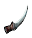 | Dolch | Knochendolch +1 | ab BG1 Kapitel 1 |
Die Klinge dieses Dolches scheint aus den Knochen irgendeines Wesens zu bestehen. Die Schneide der Klinge ist extrem scharf.
EIGENSCHAFTEN: ETW0-Bonus: -1 Schaden: 1W4 +1 (Stich) Initiativefaktor: 1 Fertigkeit: Dolch Typ: 1-händig Mindeststärke: 3 Gewicht: 1 |
| 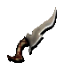 | Dolch | Eingekerbter Dolch +2 | ab BG1 Kapitel 1 |
Um die Klinge dieses Dolches sind verschiedene Kerben strategisch plaziert. Wenn dieser Dolch richtig verwendet wird, kann er die angreifenden Schläge fremder Klingenwaffen auffangen.
EIGENSCHAFTEN: RK-Bonus: -1 gg. Klingenwaffen ETW0-Bonus: -2 Schaden: 1W4 +2 (Stich) Initiativefaktor: 0 Fertigkeit: Dolch Typ: 1-händig Mindeststärke: 3 Gewicht: 1 |
| 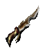 | Dolch | Phantomdolch +3 | ab BG2:SvA Kapitel 3 |
Dieser Dolch scheint beinahe von selbst nach seinen Feinden zu greifen und instinktiv die verwundbarste Stelle aller Wesen zu finden.
EIGENSCHAFTEN: ETW0-Bonus: -3 Schaden: 1W4 +3 (Stich) Initiativefaktor: 0 Fertigkeit: Dolch Typ: 1-händig Mindeststärke: 3 Gewicht: 1 |
| 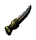 | Dolch | Entropische Klinge +3 | ab BG2:TdB Kapitel 8 |
Die Oberfläche dieses kleinen Dolchs krümmt und windet sich, als ob sie sich aus dieser Form zu befreien suche.
Er sieht so aus, als sei er aus Eisen, Silber und noch ein paar anderen unterschiedlichen Metallen hergestellt. Manchmal verschmelzen sie miteinander, und dann wieder verschwinden sie in das Herz der Klinge, nur, um Minuten später wieder an die Oberfläche zu kommen. EIGENSCHAFTEN: Boni auf Treffer- und Schadenswürfe aufgrund hoher Stärke werden nicht angerechnet. ETW0-Bonus: -3 Schaden: 1W20 +3 (Stich) Initiativefaktor: 0 Fertigkeit: Dolch Typ: 1-händig Mindeststärke: 3 Gewicht: 0 |
| 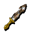 | Schlanker Dolch | Erleuchtung +2 | ab BG2:SvA Kapitel 2 |
Dieser Dolch ist die zweite Waffe der „Triade der Prüfungen“ - die anderen beiden sind „Auferstehung“ und „Vernunft“. Er ist schlank, liegt perfekt in der Hand und ist leicht wie eine Feder. Entlang der Klinge ist das Symbol der Göttermenschen von Sigil eingraviert, und die ganze Waffe scheint vor Erwartung zu beben.
EIGENSCHAFTEN: RK-Bonus: -1 Charisma: +1 ETW0-Bonus: -2 Schaden: 1W6 +2 (Stich) Initiativefaktor: 0 Fertigkeit: Dolch Typ: 1-händig Mindeststärke: 3 Gewicht: 1 |
| 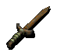 | Rostiger Dolch | Scheusalsblut-Dolch | ab BG1 Kapitel 1 |
Die Jahre, die dieser ehemals gewöhnliche Dolch im Fleisch eines Scheusals verbracht hat, haben ihn mit Eigenschaften versehen, die besser nur Scheusalen vorbehalten sein sollten. Das Blut des Scheusals ist mit dem Dolch eine Verbindung eingegangen, so dass er sich lauwarm anfühlt.
Im Kampf hört der Besitzer dieses Dolchs in seinem Unterbewusstsein ein ständiges Piepsen, das ihn jegliche Selbstbeherrschung verlieren lässt und ihn unaufhaltsam im Kampf, gleichzeitig jedoch anfällig gegenüber Zaubern macht. Die Geschichte dieses Dolches ist größtenteils unbekannt. Es ist mehr als wahrscheinlich, dass irgendein Dussel beim Kampf mit einem Scheusal nicht nur seinen Dolch sondern auch sein Leben gelassen hat. Zur Zeit ist sein Name lediglich eine Beschreibung. Er muss sich seinen richtigen Namen erst noch verdienen. EIGENSCHAFTEN: Kann nur durch „Fluch brechen“ wieder abgenommen werden. Der Träger verfällt in Raserei. RW-Bonus: +4 gg. Zauber Bei jedem Treffer erleidet das Ziel 3 Schadenspunkte durch Gift pro Runde für 120 Sekunden (Rettungswurf +2 gg. Tod). ETW0-Bonus: -2 Schaden: 1W4 +2 (Stich) Initiativefaktor: 1 Fertigkeit: Dolch Typ: 1-händig Mindeststärke: 3 Gewicht: 1 |

| Seltsame Feder | Chaos-Feder +1 | ab SoD Kapitel 8 |
Diese Feder ist aschgrau, das an den Rändern zu Schwarz verläuft. Sie ist viel größer als eine Vogelfeder, und wenn man sie länger als eine Minute lang hält, verursacht sie ein unangenehm prickelndes Gefühl.
Wenn man die Feder untersucht, findet man heraus, dass sie von einem Vrock stammt, einer der vielen Rassen der Tanar'ri, die im Abgrund leben. Die Vrock ähneln großen Geiern, und sie werden oft als Späher für die Streitkräfte der Tanar'ri im Blutkrieg genutzt. Es wird behauptet, diese Feder stamme von einem Vrock-Schamanen, der einfach daran gestorben sei, dass er nicht an sich geglaubt hat. Diesem verrückten Vrock, der für eine gewisse geistige Instabilität und die hässliche Angewohnheit bekannt war, seine Anhänger zu verschlingen, um an Stärke zu gewinnen, wurde nachgesagt, er könne andere aus seinem Schwarm dazu bringen, sich unberechenbar zu verhalten - noch viel unberechenbarer als normale Tanar'ri. Er überzeugte viele aus seinem Schwarm davon, sich die Flügel herauszureißen und in der Erde einzubuddeln. Dann wieder predigte er, dass die Tugenden der Ehrlichkeit böser und zerstörerischer seien als jede Lüge. Von ihm blieb nur diese Feder als Testament seiner fiebrigen Existenz zurück. Ein Rest des Schamanen soll sich nun noch in dieser „Chaos-Feder“ befinden. Wenn die Chaos-Feder im Kampf als Dolch verwendet wird, verursacht sie einen geringen Schaden (etwa so viel wie ein normaler Dolch) und hat die Kraft, den getroffenen Gegner zu verwirren. Wesen, die von der Feder getroffen werden, können benommen sein, weglaufen oder ihre Verbündeten angreifen. Die meisten Tanar'ri betrachten die Feder als heiliges Objekt. Die Vrocks würden jeden töten, in dessen Besitz sie sich befindet, nur um sie wieder zurückzuerobern. EIGENSCHAFTEN: Bei jedem Treffer wird das Ziel entweder betäubt, verwirrt oder in Panik versetzt (Rettungswurf gg. Zauber). Der Gegenstand kann nur für eine begrenzte Anzahl an Angriffen eingesetzt werden, bevor er zerbricht. ETW0-Bonus: -1 Schaden: 1W4 +1 (Stich) Initiativefaktor: 1 Fertigkeit: Dolch Typ: 1-händig Mindeststärke: 3 Gewicht: 1 |

| Gabel | Silbergabel | ab BG1 Kapitel 1 |
Dies ist eine silberne Tafelgabel. Ihre Zinken sind besonders scharf. Wenn du es dir genauer überlegst, kann sie auch als Dolch verwendet werden, wenn sie auch höchstwahrscheinlich nicht mehr Schaden anrichten würde als ein normaler Dolch. Sie könnte allerdings bei Gegnern nützlich sein, die nur durch silberne oder kaltgeschmiedete Waffen verletzt werden können.
EIGENSCHAFTEN: Boni auf Treffer- und Schadenswürfe aufgrund hoher Stärke werden nicht angerechnet. ETW0-Bonus: -2 gg. Lykanthropen Schaden: 1W2 (Klinge) 1W2 +2 gg. Lykanthropen Initiativefaktor: 2 Fertigkeit: Dolch Typ: 1-händig Gewicht: 0 |

| Dolch | Dolch aus Grünstahl +1 | ab BG1 Kapitel 1 |
Dieser schlanke Dolch wurde aus dem berühmten Baatorianischen Grünstahl gefertigt. Dieses eigenartige grüne Erz, das nur in den Ödländern von Avernus vorkommt, wird durch besondere Glühverfahren in ein Metall umgewandelt, das viel leichter als normaler Stahl ist. Waffen aus Grünstahl können auch ihre außergewöhnlich feinen Schneiden bewahren und sind so in der Lage, mehr Schaden als normale Waffen zu verursachen.
EIGENSCHAFTEN: ETW0-Bonus: -1 Schaden: 1W4 +1 (Stich) Initiativefaktor: 0 Fertigkeit: Dolch Typ: 1-händig Mindeststärke: 3 Gewicht: 0 |
| 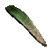 | Krummes Messer | Kaarlacs Messer | ab BG1 Kapitel 5 |
Dieses verzauberte Messer, die letzte Meisterleistung von Kaarlag Cragenmoor, ist ein Segen für alle Anhänger der mystischen Künste. Kaarlac, immer auf der Suche nach Größe und Macht, wollte einen magischen Gegenstand schaffen, der einen Abdruck eines Teils seines Gedächtnisses bewahren konnte - insbesondere des Kurzzeitgedächtnisses, das sein beachtliches Repertoire an Zaubern umfasste. Er war der Auffassung, dass er dann sein Zauberwissen jederzeit verdoppeln könne.
Unglücklicherweise überstieg der Versuch Kaarlags Fähigkeiten, so dass er plötzlich inmitten seiner hitzigen Zaubereien den Verstand verlor und sich selbst das Messer in die Brust stieß. Sein Opfer war jedoch nicht komplett vergebens, da das Messer genug der beabsichtigten Verzauberung besitzt, um seinem Träger die Fähigkeit zu verleihen, sich die einige zusätzliche Zauber des ersten Grades einzuprägen. EIGENSCHAFTEN: Magierzauber: +3 (Grad 1) Schaden: 1W4 (Stich) Initiativefaktor: 2 Fertigkeit: Dolch Typ: 1-händig Mindeststärke: 3 Gewicht: 1 |

| Dolch | Porphatys Dolch +3 | ab BG2:TdB Kapitel 8 |
Die Säuren von Porphyatys, der fünften Unterebene von Carceri, sind nicht nur für die physische Beschaffenheit eines Körpers gefährlich - sie greifen auch seinen Geist und seine Seele an, und zehren an seinem Verstand. Waffen, die mit diesem Herzen des Betruges geschmiedet wurden, richten bei ihren Besitzern gleiches an, aber zu viele glauben, dass die Macht der Säure einer Waffe aus Porphatys dieses Risiko wert ist.
EIGENSCHAFTEN: Kann nur durch „Fluch brechen“ wieder abgenommen werden. Der Träger verfällt in Raserei. ETW0-Bonus: -3 Schaden: 1W4 +3 (Stich) Schadensbonus: +1W6 (Säure) Initiativefaktor: 0 Fertigkeit: Dolch Typ: 1-händig Mindeststärke: 3 Gewicht: 1 |
| 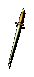 | Hochwertiges Stilett | Hochwertiges Stilett | ab BG1 Kapitel 1 |
Dieser schlanke Dolch ist eine Schönheit seiner Gattung. Diese Stichwaffe kann einhändig geführt werden.
EIGENSCHAFTEN: ETW0-Bonus: -1 Schaden: 1W4 (Stich) Initiativefaktor: 1 Fertigkeit: Dolch Typ: 1-händig Mindeststärke: 3 Gewicht: 1 |

| Unhandlich geformter Dolch | Runenklinge | ab BG2:SvA Kapitel 6 |
Diese verzauberten Klingen, geschaffen von einer legendären Gilde von Kriegsmagiern, die als die „Scharlachroten Seher“ bekannt waren, wurden speziell zur Verteidigung gegen gegnerische Zauberwirker erdacht. Die in die Klinge eingeätzten winzigen Runen sind machtvolle Schutzzauber vor jeglicher Art von Magie. Unglücklicherweise ist die so völlig auf die magische Verteidigung ausgelegte Waffe aufgrund ihres eher unhandlichen Designs im Nahkampf nahezu wirkungslos.
EIGENSCHAFTEN: Magiewiderstand: +25 % RW-Bonus: -2 gg. Zauber ETW0-Bonus: +4 Schaden: 1W4 (Stich) Initiativefaktor: 3 Fertigkeit: Dolch Typ: 1-händig Mindeststärke: 3 Gewicht: 1 |
| 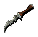 | Verschlagener Dolch | Letzte Rettung +6 | ab BG1 Kapitel 5 |
Dieser kleine Dolch sieht zerbrechlich aus, aber der Rand der Klinge ist mit einer Reihe gezackter Zähne versehen. Der Griff selbst ist mit getrocknetem Blut verkrustet, wahrscheinlich mit dem Blut derjenigen, die die Waffe hielten und dann nicht mehr loslassen konnten.
Forschungsergebnisse besagen, dass dieser verfluchte Dolch eine ganze Reihe von Namen hatte, von denen der bekannteste „Letzte Rettung“ ist. Wenn dieser Dolch angelegt ist, kann der Träger ihn nicht mehr loslassen, bis er stirbt oder der Fluch durch einen Zauber oder göttlichen Eingriff aufgehoben wird. Obwohl der Dolch langsamer ist als die meisten zweihändigen Waffen und der Schaden mit einem Kratzer vergleichbar ist, soll er beinahe jedes Wesen, das er trifft, Schaden zufügen können, unabhängig dessen Herkunftsebene oder Verteidigung. Eine Ebenenreisende, die sich von seinem Fluch befreit hatte, nahm ihn sogar freiwillig auf ihre Reisen mit. Sie ging davon aus, dass eine Situation, in der sie ihn einsetzen *musste*, nicht durch seinen Besitz verschlimmert werden könne. EIGENSCHAFTEN: Boni auf Schadenswürfe aufgrund hoher Stärke werden nicht angerechnet. Kann nur durch „Fluch brechen“ wieder abgenommen werden. ETW0-Bonus: -6 Schaden: 1W2 (Klinge) Initiativefaktor: 10 Fertigkeit: Dolch Typ: 1-händig Mindeststärke: 3 Gewicht: 1 |
| 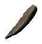 | Steinsplitter | Verrückter Splitter +1 | ab BG2:SvA Kapitel 2 |
Dieses Stück Stein besitzt die Form eines Dolches. Es ist ein Teil der Statue des etherserischen Zauberers Gangroighydon und birgt einen mächtigen Zauber. Immer wenn jemandem mit dem Steinsplitter ein Stich versetzt wird, besteht die Chance, dass dieser verflucht wird. Wahrscheinlich hat der fürchterliche Fluch, der auf Gangroighydrons Lippen lag, als er erstarrte, auf seinen gesamten versteinerten Körper übergegriffen und 'vergiftet' nun mit seiner bösen Magie all diejenigen, denen mit dem Splitter ein Stich versetzt wird.
EIGENSCHAFTEN: Bei jedem Treffer erleidet das Ziel 1 Schadenspunkte durch Gift pro Sekunde bis es stirbt oder geheilt wird (Rettungswurf gg. Tod). Der Gegenstand kann nur für eine begrenzte Anzahl an Angriffen eingesetzt werden, bevor er zerbricht. ETW0-Bonus: -1 Schaden: 1W4 +1 (Stich) Initiativefaktor: 2 Fertigkeit: Dolch Typ: 1-händig Mindeststärke: 3 Gewicht: 1 |

| Dolch | Witwenmacher +2 | ab BG2:SvA Kapitel 2 |
Dieses Schwert, bekannt unter der Bezeichnung „Witwenmacher“, ist mit dem tödlichen Gift der gefürchteten Hakenspinne versehen und auf Grund der magischen Eigenschaften seiner Klinge ein begehrtes Arbeitsmittel praktizierender Meuchelmörder auf allen Ebenen. Das Gift, das durch Magie dauerhaft in den Dolch eingelagert wurde, infiziert jeden, der durch das Schwert verletzt wird. Zusätzlich erhält der Träger des Witwenmachers allein schon durch das Tragen des Schwertes eine verbesserte Widerstandsfähigkeit gegen Gifte.
EIGENSCHAFTEN: Bei jedem Treffer erleidet das Ziel 1 Schadenspunkt durch Gift alle 3 Sekunden für 2 Runden (Rettungswurf gg. Tod). Giftwiderstand: +25 % ETW0-Bonus: -2 Schaden: 1W4 +2 (Stich) Schadensbonus: +2 (Klinge) Initiativefaktor: 0 Fertigkeit: Dolch Typ: 1-händig Mindeststärke: 3 Gewicht: 1 |
Streitäxte
| Symbol | Name (nicht identifiziert) | Name (identifiziert) | Verfügbarkeit | Beschreibung |
|---|---|---|---|---|
| 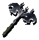 | Scharfe Streitaxt | Auferstehung +2 | ab BG2:SvA Kapitel 2 |
„Auferstehung“ ist eine der besten Waffen, die in der Großen Gießerei, der Heimat der Gläubigen der Quelle in Sigil, hergestellt werden. Gemeinsam mit dem Hammer „Vernunft“ und dem Dolch „Erleuchtung“ bildet sie eine Dreiergruppe, die unter dem Namen „Triade der Prüfungen“ bekannt ist. Das Symbol des Bundes ist in den Kopf der Axt eingraviert, und die Schneiden der Klingen sind so scharf, dass man damit ein Haar längs spalten könnte.
EIGENSCHAFTEN: RK-Bonus: -1 Charisma: +1 ETW0-Bonus: -2 Schaden: 1W8 +2 (Klinge) Initiativefaktor: 4 Fertigkeit: Axt Typ: 1-händig Mindeststärke: 10 Gewicht: 4 |
| 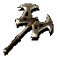 | Streitaxt | Verzauberte Streitaxt +1 | ab BG1 Kapitel 1 |
Bei genauerer Betrachtung der Waffe entdeckst du ein seltsames Symbol, sehr schwach, auf der Oberfläche des Axtkopfes. Wenn du daran mit deinem Finger entlangfährst, entlädt sich plötzlich ein elektrischer Strom, und vor deinen Augen ändert sich der Kopf der Axt in ein silbrig wirkendes Metall.
Die Schneide ist unglaublich scharf. Sie sieht beinahe so aus, als könne sie, wenn nötig, Stein spalten. Das Symbol, das du mit deinem Finger nachgezeichnet hast, glänzt nun stark, und wenn das überhaupt möglich ist, ist die Axt sogar noch leichter geworden. EIGENSCHAFTEN: ETW0-Bonus: -1 Schaden: 1W8 +1 (Klinge) Initiativefaktor: 6 Fertigkeit: Axt Typ: 1-händig Mindeststärke: 10 Gewicht: 4 |
| 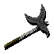 | Streitaxt der Qualität | Streitaxt der Qualität | ab BG1 Kapitel 1 |
In den Schaft und die Klingen dieser Axt sind komplizierte Runen geätzt. Die Klingen der Axt sind messerscharf. Sie sieht so aus, als könne man sich mit ihr rasieren. Auf diese Idee würdest du jedoch nur kommen, wenn du bereits ein paar Humpen Bier intus hättest. Der Griff selbst besteht aus Hartholz, und Leder ist fest um den Griff gewickelt, wodurch der Träger noch fester zugreifen kann.
EIGENSCHAFTEN: ETW0-Bonus: -1 Schaden: 1d8 +1 (Klinge) Initiativefaktor: 7 Fertigkeit: Axt Typ: 1-händig Mindeststärke: 10 Gewicht: 8 |

| Polierte Streitaxt | Blindseiter +1 | ab SoD Kapitel 8 |
Diese prachtvolle Axt, bekannt als der „Blindseiter“, ist wirklich einmalig. Es wird gemunkelt, dass sie das Werk eines gewissen Akyzum Yar ist, der Chefmetallurge eines alten Kaiserreichs der Materiellen Ebene gewesen sein soll. Der Kaiser, dem Yar diente, war ein eitler und hinterhältiger Mann. Er beauftragte Yar mit der Herstellung einer „Waffe von unübertroffener Schönheit“. Als Yar nach Jahren mühseliger Plackerei dem Kaiser endlich den „Blindseiter“ präsentieren konnte, wurde er umgehend getötet, damit seine Arbeit nicht reproduziert werden konnte.
Die verschiedenen Erze und Verzauberungen, die beim Schmieden dieser Waffe verwendet wurden, haben ein Metall entstehen lassen, das leicht, robust und hochreflektierend ist. Die Axt erhielt ihren Namen nach ihrer Eigenheit, Licht in die Augen des Gegners zu reflektieren, so dass dieser geblendet wurde und leichter niedergestreckt werden konnte. Zudem verleiht die Axt - als magischen Zusatz ihrer reflektierenden Eigenschaften - ihrem Träger Immunität gegen Blendangriffe. EIGENSCHAFTEN: Der Träger ist immun gegen Blindheit. Bei jedem Treffer wird das Ziel für eine Runde geblendet (Rettungswurf gg. Tod). RK-Bonus: -2 ETW0-Bonus: -1 Schaden: 1W8 +1 (Klinge) Initiativefaktor: 6 Fertigkeit: Axt Typ: 1-händig Mindeststärke: 10 Gewicht: 4 |

| Fleischerbeil | Schlächter der Unschuldigen +2 | ab BG2:SvA Kapitel 3 |
Dieses riesige, axtähnliche Hackbeil, erhielt seinen Beinamen im Zusammenhang mit Oswell Breck, einem Schlächter, der einst in Sigils Bezirk der Kuratoren tätig war. Der Plausch besagt, dass dieser liebenswürdige und allseits geachtete Bürger plötzlich auf eine mörderische und blutige Hetzjagd ging, die zehn Tage und zehn Nächte andauerte. Mit dem Hackbeil in der Hand zog er durch die Straßen des Bezirks und zerhackte auf brutalste Weise alles, was ihm vors Beil lief - egal ob Mann, Frau oder Kind. Schließlich setzte die Dame selbst dem Ganzen ein Ende. Es wird gemunkelt, dass er an einer seltsamen Krankheit litt, die seinen Körper langsam dahinsiechen ließ, und dass ihm dies den Verstand raubte und zu dem Blutbad führte.
Der Ursprung dieses Mordwerkzeugs ist geheimnisumwoben. Die unterschiedlichen Zauberer und Gelehrten, von denen die Waffe untersucht wurde, nachdem Oswell in einen Irrgang geschickt worden und sie nicht mehr in Gebrauch war, haben aber die Art ihrer Verzauberung katalogisiert. Das Hackbeil scheint sich von seinen Opfern zu ernähren, indem es ihnen die Lebenskraft aussaugt und einen Teil davon auf den Träger der Waffe überträgt. EIGENSCHAFTEN: Überträgt 2 Trefferpunkte vom Zielobjekt auf den Träger. ETW0-Bonus: -2 Schaden: 1W8 +2 (Klinge) Initiativefaktor: 5 Fertigkeit: Axt Typ: 1-händig Mindeststärke: 10 Gewicht: 4 |

| Stumpfe Streitaxt | Herzensbrecher +3 | ab BG2:SvA Kapitel 2 |
Ein einziger Tropfen des Blutes des Trägers, der auf die Grenze zwischen Axtkopf und Griff fällt, reicht aus, den „Herzensbrecher“ aufzuwecken. Der Blutstropfen läuft dann über die Klinge und den Griff der Axt, wodurch sie einen dumpfen roten Schimmer bekommt. Der Glanz des Herzensbrechers pulsiert im Takt mit dem Herzschlag des Trägers.
Auf welches Ziel er es auch immer abgesehen hat, der Herzensbrecher ist eine starke Waffe, die beinahe jede Art von Verteidigung durchbrechen kann. Bei Zielen, durch deren Adern Blut fließt (egal, ob ihr eigenes oder das anderer - Vampire, aufgepasst!), fügt der Herzensbrecher zusätzlichen Schaden zu, da jeder Schlag gleichzeitig das Herz des Opfers zermalmt, egal, wohin die Axt geschlagen hat. EIGENSCHAFTEN: ETW0-Bonus: -3 Schaden: 1W8 +3 (Klinge) Schadensbonus: +3 (Elektrizität) +1W4 Klingenschaden gg. körperliche Wesen Initiativefaktor: 4 Fertigkeit: Axt Typ: 1-händig Mindeststärke: 10 Gewicht: 4 |
| 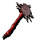 | Bizarre blutrote Axt | Geschenk des Hasses +1 | ab SoD Kapitel 8 |
Aus den Annalen der bekannten Geschichte der Ebenen geht nicht deutlich hervor, wann das „Geschenk des Hasses“ hergestellt wurde, aber die blutige Spur, die sie über die Ebenen hinweg hinterlassen hat, scheint dich nun endlich erreicht zu haben.
Die Axt erweckt in den Feinden des Besitzers Hass, und im Träger selbst eine rasende Wut. Im Kampf werden die Totenköpfe im Schaft zu Leben erweckt, klappern mit ihren Zähnen. Die Zähne selbst (Überreste böser Opfer, die in die Klinge eingearbeitet wurden) wachsen aus der Klinge heraus, um den Gegner mit jedem Schlag zu beißen und sein Fleisch zu zerreißen. Wenn das „Geschenk des Hasses“ erst einmal angelegt ist, kann es nicht wieder abgelegt werden, bis der Fluch aufgehoben wird. EIGENSCHAFTEN: Kann nur durch „Fluch brechen“ wieder abgenommen werden. Der Träger verfällt in Raserei. ETW0-Bonus: -1 Schaden: 2W8 +1 (Klinge) Initiativefaktor: 6 Fertigkeit: Axt Typ: 1-händig Mindeststärke: 10 Gewicht: 7 |
| 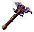 | Bunte Axt | Axt des Narren +3 | ab BG2:SvA Kapitel 6 |
Wer diese Axt erschaffen hat, muss entweder verrückt oder ein Genie gewesen sein. Nur die geübtesten Schmiede können eine Waffe aus Chaosmaterial, dem instabilsten und unvorhersehbarsten Element auf allen Ebenen, geschmiedet haben.
Geschichten um genau diese Axt haben immer und immer wieder die Runde im Universum der Ebenen gemacht. Heroische Taten von Männern, die Wesen besiegten, indem sie diese einfach nur mit der Axt berührten, sowie Geschichten davon, wie dieselben Männer einen schrecklichen Tod fanden, während sie ganz einfache, alltägliche Ausgaben ausführten. Zaknar, der Einfache - Besiegte einen Schlingenden mit einem einzigen Schwung seiner Axt. Wurde in den endlosen Ebenen von Tabor von einem fallenden Felsblock zerschmettert und starb. Garkon, der Gerechte - Wurde von einem mysteriösen Stromschlag getroffen, als er gerade gegen eine Schädelratte kämpfte. Kannas, Händler von Beruf. Wurde lebendig begraben, als die Steinmauer, auf der die Axt befestigt war, über ihm zusammenbrach. Kvry Matterson - Ein Kind von nur neun Wintern. Er konnte eine Gruppe plündernder Feuerfledermäuse nicht nur abwehren, sondern schaffte es sogar, zwei von ihnen zu töten! Die Liste der Tragödien und Taten geht endlos weiter. EIGENSCHAFTEN: Besonderheiten: ??? ETW0-Bonus: -3 Schaden: 1W2 (Klinge) Initiativefaktor: 3 Fertigkeit: Axt Typ: 1-händig Mindeststärke: 10 Gewicht: 2 |
| 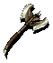 | Henkersaxt | Jüngstes Gericht +3 | ab BG2:SvA Kapitel 6 |
Diese uralte doppelklingige Streitaxt erinnert an eine Henkersaxt. Der Kopf wurde in Form des Symbols der Gnadentöter (ein roter Drache mit ausgebreiteten Flügeln, die die Klingen der Axt bilden) geschmiedet. Die Axt selbst ist riesig und erfordert zur effektiven Nutzung eine ungemeine Kraft.
Diese Axt ist ebenso Teil von Vhailor wie seine Rüstung, und die Axt selbst trägt einen Teil seiner Essenz in sich. Dadurch ist sie der Gerechtigkeit völlig ergeben und gewährt dem Träger keine Ruhe, solange noch „Urteile“ ausgeführt werden müssen. Der beachtliche Schaden, den sie dem Gegner zufügt, wird verdoppelt, wenn die Axt ein schuldiges oder chaotisches Wesen trifft. Außerdem verleiht die Axt ihrem Träger einen Teil ihrer Kraft, wodurch er zusätzlichen Schutz vor Angriffen erhält. Die Herkunft dieser Axt ist unbekannt. Wenn du raten solltest, würdest du sagen, dass die Axt ihre Kräfte einfach aus Vhailors Glauben gewonnen hat. EIGENSCHAFTEN: Kann nur durch „Fluch brechen“ wieder abgenommen werden. RK-Bonus: -1 ETW0-Bonus: -3 Schaden: 1W8 +3 (Klinge) 2W8 +6 gg. chaotische Wesen Schadensbonus: +1W6 (Feuer) Initiativefaktor: 4 Fertigkeit: Axt Typ: 1-händig Mindeststärke: 16 Gewicht: 12 |
| 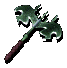 | Axt der klirrenden Kälte | Klinge der Vergessenheit +2 | ab BG2:SvA Kapitel 2 |
Wenn ihre Kräfte erwacht sind und ihr Name bekannt ist, wird die „Klinge der Vergessenheit“ völlig schwarz… Während vorher nur die Schneiden ebenholzfarben waren, hat sich die Schwärze nun über die gesamte Klinge ausgebreitet. Die Kälte, die die Klinge ausstrahlt, wird verzehnfacht, so dass es schmerzvoll ist, sie zu lange zu halten.
Die „Klinge der Vergessenheit“ fügt dem Gegner bei jedem Schlag Auflösungsschaden zu, denn sie löst das Fleisch um jede Wunde herum, die sie schlägt, auf und ätzt die Wunde beim Schlagen aus. Es gibt auch Vermutungen, dass irgendwo in der Axt selbst eine Sphäre des Nichts eingeschlossen sein könnte, aber das sind nur Vermutungen. In Anbetracht der Tatsache, dass die Ebenen endlos sind, ist alles möglich. EIGENSCHAFTEN: Kältewiderstand: +50 % ETW0-Bonus: -1 Schaden: 1W8 +1 (Klinge) Schadensbonus: +1W6 (Kälte) Initiativefaktor: 5 Fertigkeit: Axt Typ: 1-händig Mindeststärke: 10 Gewicht: 5 |
Bolzen
| Symbol | Name (nicht identifiziert) | Name (identifiziert) | Verfügbarkeit | Beschreibung |
|---|---|---|---|---|

| Würfelförmige Bolzen | Bolzen von Acheron +1 | ab BG1 Kapitel 5 |
Diese verzauberten Bolzen wurden aus einem der großen Würfel Acherons gefertigt. Vielen Gelehrten der Ebenen zufolge ist Acheron eine Ebene, die in ständigem Krieg mit sich selbst steht. Dort soll es riesige Würfel von der Größe ganzer Kontinente geben, die umherschweben und gegeneinander prallen. Auf der Oberfläche dieser Würfel führen Legionen von Soldaten Krieg gegeneinander und schwärmen von Würfel zu Würfel, um jeden anzugreifen, den sie dort vorfinden. Die Ebene ist erfüllt vom Rasseln der Klingen und dem gewaltigen Donnern aufeinanderprallender Würfel.
Diese Bolzen tragen ein Stück von Acherons Herzen in sich. Wenn sie einen Gegner treffen, tun sie das mit einer Wucht, die ihn beim Aufschlag derart in Erstaunen versetzt, dass er für geraume Zeit in einen Zustand der Hilflosigkeit verfällt. EIGENSCHAFTEN: Bei jedem Treffer wird das Ziel für eine Runde betäubt (Rettungswurf gg. Tod). ETW0-Bonus: -1 Schaden: 1W4 +1 (Wucht) Schusswaffe: Armbrust Gewicht: 0 |

| Sphärische Bolzen | Säureschwamm-Bolzen +1 | ab SoD Kapitel 8 |
Die kittähnlichen Kugeln auf den Spitzen dieser Armbrustbolzen sind eigentlich getrocknete Schwämme, wie man sie in vielen der großen Seen Bytopias antrifft. Von den meisten Gelehrten scheinbar nicht beachtet, hat man rein zufällig herausgefunden, dass diese winzigen Schwämme die Fähigkeit besitzen, Säuren aufzunehmen und in ihrem Körper zu speichern, ohne sich selbst Schaden zuzufügen.
Dies hatte zur Folge, dass unzählige dieser Wesen gesammelt und gezüchtet wurden, um sie im Blutkrieg als Waffen gegen die Scheusale einzusetzen. Nachdem sie einige Tage lang nur Säure als Nahrung erhalten haben, werden sie geerntet, getrocknet und mit einem Harz versiegelt, das sich wie eine dehnbare Blase um den Schwamm legt. Der Schwamm wird dann auf der Spitze eines Pfeils oder Armbrustbolzens angebracht und ist einsatzbereit. Wenn die Spitze des Bolzens ein Wesen mit ausreichender Wucht trifft, zerplatzt die Harzblase, der Schwamm wird ausgedrückt, und die Säure verteilt sich im Körper des Opfers. EIGENSCHAFTEN: Bei jedem Treffer erleidet das Ziel 6 Schadenspunkte durch Säure (Rettungswurf gg. Odemwaffen für halben Schaden). ETW0-Bonus: -1 Schaden: 1W2 +1 (Geschoss) Schusswaffe: Armbrust Gewicht: 0 |
| 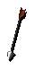 | Pyramidenförmige Bolzen | Bolzen der „Regel der Drei“ | ab SoD Kapitel 10 |
Diese Armbrustbolzen sind das Werk eines verdrehten mechanischen Genies. Genau unterhalb der Spitze jedes Bolzen befindet sich ein kleiner Verschluss, der sich durch Drücken entriegeln lässt und damit dem Bolzen ermöglicht, sich zu teilen. Soweit du sehen kannst, wurden die Spitzen der Bolzen sorgfältig in Pyramidenform gefertigt, so dass jede von ihnen nach dem Entriegeln beim Aufschlag dreigeteilt wird. Jedes der dreieckigen Teile schlägt dann eine andere Richtung durch den Körper des Opfers ein und zerfetzt seine inneren Organe.
EIGENSCHAFTEN: Schaden: 1W10 +5 (Geschoss) Schusswaffe: Armbrust Gewicht: 0 |

| Bolzen | Zephyr-Bolzen +1 | ab BG1 Kapitel 1 |
Diese Armbrustbolzen haben Spitzen mit Rillen an den Seiten. Sie richten nicht mehr Schaden an als normale Armbrustbolzen. Sie sind jedoch mit einem schwachen Zauber belegt, der ihnen ermöglicht, während des Fluges ihre Richtung zu korrigieren. Dies erhöht die Wahrscheinlichkeit, einen Gegner zu treffen.
EIGENSCHAFTEN: ETW0-Bonus: -1 Schaden: 1W8 (Geschoss) Schusswaffe: Armbrust Gewicht: 0 |
|
| Pfeifende Bolzen | Bolzen des pfeifenden Untergangs +2 | ab BG2:SvA Kapitel 6 |
Diese Bolzen haben irgendwie die tödliche Harmonie des Pandämoniums eingefangen und, um das Ganze noch schlimmer zu machen, ist ein wütender Luftelementar in die Spitze der Bolzen eingeschlossen. Wenn einer dieser Bolzen einen Gegner trifft, zerbricht die Spitze, und der Luftelementar wird freigesetzt. Dieser wirbelt dann in wilder Raserei um den Gegner herum und schlägt einmal zu, bevor er verschwindet.
EIGENSCHAFTEN: ETW0-Bonus: -2 Schaden: 4W4 (Wucht) Schusswaffe: Armbrust Gewicht: 0 |
| 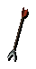 | Gespreizte Bolzen | Bolzen des Zusammenzuckens +1 | ab SoD Kapitel 10 |
Diese gabelförmigen Bolzen haben dank ihrer Verzauberung nur eines im Sinn: Entmannung. Wenn sie abgefeuert werden, zielen sie auf den verwundbarsten Punkt des Opfers und dringen ins Fleisch ein. Dann arbeitet sich die Spitze eines jeden Bolzens nach außen und richtet noch größeren Schaden an. Dies macht es nahezu unmöglich, ihn herauszuziehen. Die Bolzen sind nach der Reaktion benannt, die eventuelle Augenzeugen nach Abfeuern des Geschosses zeigen.
EIGENSCHAFTEN: Die Wahrscheinlichkeit für einen kritischen Treffer steigt um 15 %. ETW0-Bonus: -1 Schaden: 1W8 +1 (Geschoss) Schadensbonus: +4 (Klinge) Schusswaffe: Armbrust Gewicht: 0 |
| Geflügelte Bolzen | Geflügelte Bolzen | ab BG1 Kapitel 1 |
Die Spitzen dieser Bolzen sind so geformt, dass sie wie ein Paar gefederter Flügel aussehen. Die Bolzen sind extrem leicht und wirken eher wie Pfeile als wie Armbrustbolzen. Obwohl sie nicht magisch sind, sind sie treffsicherer und richten mehr Schaden an als normale Armbrustbolzen, wenn sie einen Gegner treffen.
EIGENSCHAFTEN: ETW0-Bonus: -1 Schaden: 1W8 +2 (Geschoss) Schusswaffe: Armbrust Gewicht: 0 |
|
| Bolzen | Gezackte Bolzen +1 | SoD chapter 5 or later |
Diese verzauberten Bolzen verfügen über eine Reihe gezackter, schwarzer Runen entlang des Schafts. Wenn sie abgefeuert werden, stellen sich die Runen wie Dornen auf und bilden eine zusätzliche Reihe heimtückischer Spitzen, die in das Opfer eindringen.
EIGENSCHAFTEN: ETW0-Bonus: +1 Schaden: 1W4 +2 (Geschoss) Schusswaffe: Armbrust Gewicht: 0 |
|
| Reißzahnbolzen | Bolzen von Kessek, dem Verschlingenden +2 | ab BG2:SvA Kapitel 3 |
Diese Bolzen werden auch „Kesseks Zähne“ genannt. Die Spitzen jener verzauberten Bolzen sind aus Knochen gefertigt und verfügen über zwei lange Fangzähne, die in einem Bogen von ihrer Mitte ausgehen. Wenn einer dieser Bolzen einen Gegner trifft, erwachen die Zähne zum Leben und beginnen, sich langsam und schmerzhaft durch den Körper des Opfers zu fressen.
Der Legende nach war Kessek ein Häuptling der Bariaur in den Außenländern, der vor vielen Jahrhunderten in der Kluft der Tränen zusehen musste, wie sein Volk während eines Schneesturms verhungerte. Da sie wegen der heftigen Schneefälle in der Kluft festsaßen, sandte er Kundschafter aus, um seine Nachbarn in der Provinz Ohinru um Hilfe zu bitten. Als die Handelsfürsten von Ohinru von der Not der Bariaur erfuhren, sahen sie darin die Gelegenheit, diese „nomadische Plage“ auszulöschen und ihr Land für sich zu beanspruchen. Die Kundschafter der Bariaur wurden hingerichtet und ihre Köpfe auf Mauersimse gestellt, damit „die Geier etwas zu fressen hätten, während die Bariaur verhungerten“. Als die Stürme vorüber waren und mehr als die Hälfte seines Volkes verhungert war, erfuhr Kessek schließlich, was mit seinen Kundschaftern geschehen war. Vor Wut fast in den Wahnsinn getrieben fertigte er ein Bündel Armbrustbolzen aus den Zähnen und Knochen seines verhungerten Volkes. Als er fertig war, reiste er nachts nach Ohinru und feuerte seine Bolzen blindlings in die Straßen der Stadt ab. Dabei flüsterte er jeweils den Namen eines verstorbenen Bariaur, wenn er die Sehne spannte. Jeder abgeschossene Bolzen wand sich im Flug, suchte gierig nach einem Opfer und fand eins… und dann noch eins und noch eins. Die Nacht war von den erstickten Schreien der Bewohner von Ohinru erfüllt, als die Verschlingenden ihre Körper heimsuchten. Als es tagte, gab es wieder ein Fressen für die Geier. Von Kessek fehlte jegliche Spur. Die Bolzen von Kessek, dem Verschlingenden, können noch immer hier und da auf den Ebenen gefunden werden. Man sagt, dass für jedes Opfer, dass ein Bolzen fordere, ein neuer Bolzen entstehe… der über dieselbe Gier verfüge wie der erste. EIGENSCHAFTEN: Bei jedem Treffer erleidet das Ziel 8 Schadenspunkte durch Stich (Rettungswurf gg. Tod für halben Schaden). ETW0-Bonus: -4 Schaden: 1W8 +2 (Geschoss) Schusswaffe: Armbrust Gewicht: 0 |
Kriegshämmer
| Symbol | Name (nicht identifiziert) | Name (identifiziert) | Verfügbarkeit | Beschreibung |
|---|---|---|---|---|
| 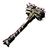 | Kriegshammer | Schwefelhammer +1 | ab BG2:SvA Kapitel 2 |
Diese Art von Waffe, von der man annimmt, sie sei in den Flammen der Feuerebene geschmiedet worden, ist selbst in Sigil ausgesprochen selten. Die elementaren Eigenschaften des Hammers gewähren seinem Träger eine erhöhte Widerstandfähigkeit gegen Feuer und Angriffe durch Feuer. Außerdem fügt der Hammer im Kampf zusätzlichen Schaden zu, wenn er einen Treffer erzielt, indem er das Ziel mit lodernden Flammen versengt.
EIGENSCHAFTEN: Feuerwiderstand: +25 % ETW0-Bonus: -1 Schaden: 1W8 +1 (Wucht) Schadensbonus: +4 (Feuer) Initiativefaktor: 3 Fertigkeit: Kriegshammer Typ: 1-händig Mindeststärke: 9 Gewicht: 5 |

| Hammer mit schwerem Kopf | Narrentöter +2 | ab BG2:SvA Kapitel 2 |
Dieser Kriegshammer besitzt einen riesigen Steinkopf in Form eines rechteckigen Blocks. An allen Seiten des Hammerkopfes befinden sich schwache Reste von Blut und Metzelei. Der Schaft besteht aus dickem Holz, das zu schwach aussieht, um das Gewicht des Hammerkopfes auszuhalten.
Dieser verzauberte Hammer wurde einst von den Athar als Werkzeug verwendet, nämlich während der Zeit ihrer religiösen Verfolgung in der Geschichte ihres Bundes. Der magische Kriegshammer „Narrentöter“ war so konstruiert, dass er besonders dummen Gegnern zusätzlichen Schaden zufügte. Als er jedoch hergestellt wurde, wurde dieser Zauber so umgedreht, dass ein Träger, der noch dümmer war als sein Opfer ebenfalls Schaden erlitt. Viele Jahre lang wurde der Hammer unter rivalisierenden Mitgliedern der Athar rituell als ein primitiver (und tödlicher) Intelligenztest verwendet. Er wurde vor vielen Jahren aus ihrem Hauptquartier im Zerschmetterten Tempel gestohlen und ist seitdem ein- oder zweimal in der einen oder anderen Ebene aufgetaucht. Es wird angenommen, dass sich der Kampf zwischen Intelligenz und Intelligenz, den der Hammer einst zwischen seinem Träger und seinen Feinden ausfocht, im Laufe der Zeit verflüchtigt hat, aber niemand war entschlossen genug, dies zu testen. EIGENSCHAFTEN: Bei jedem Treffer erleidet das Träger 1W4 +3 Wuchtschaden, basierend auf ihrer Intelligenz: 6 oder geringer: immer 7: 75 % Wahrscheinlichkeit 8: 50 % Wahrscheinlichkeit 9: 35 % Wahrscheinlichkeit 10 bis 14: 25 % Wahrscheinlichkeit 15 oder höher: nie ETW0-Bonus: -2 Schaden: 1W4 +3 (Wucht) Initiativefaktor: 2 Fertigkeit: Kriegshammer Typ: 1-händig Mindeststärke: 9 Gewicht: 5 |
| 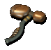 | Hammer der Qualität | Hammer der Qualität | ab BG1 Kapitel 1 |
Dies ist ein gut gearbeiteter Hammer. Ätzungen und Symbole von Göttermenschen aus Sigil schmücken den Kopf der Waffe und ziehen sich bis zum Schaft hinunter. Trotz seines schweren Aussehens fühlt er sich viel leichter an, als er aussieht.
STATISTICS: ETW0-Bonus: -1 Schaden: 1W4 +1 (Wucht) Initiativefaktor: 4 Fertigkeit: Kriegshammer Typ: 1-händig Mindeststärke: 9 Gewicht: 5 |

| Massiver Kriegshammer | Vernunft +2 | ab BG2:SvA Kapitel 2 |
Dieser enorme Hammer ist neben der Axt „Auferstehung“ und dem Dolch „Erleuchtung“ die dritte Waffe aus der „Triade der Prüfungen“ der Göttermenschen in Sigil. Sein Kopf ist mit mystischen Runen und mit dem Symbol der Göttermenschen verziert. Er vibriert in deinen Händen.
EIGENSCHAFTEN: RK-Bonus: -1 Charisma: +1 ETW0-Bonus: -2 Schaden: 1W4 +3 (Wucht) Schadensbonus: +2 (Wucht) Initiativefaktor: 2 Fertigkeit: Kriegshammer Typ: 1-händig Mindeststärke: 9 Gewicht: 5 |

| Vorschlaghammer | Hammer des Zerschmetterns +2 | ab BG2:SvA Kapitel 6 |
Forschunsergebnissen zufolge ist dies eine wahrhaft hervorragende Waffe. Dieser Kriegshammer (der auch „Hammer des Zerschmetterns“ genannt wird) ist jedem herkömmlichen Vorschlaghammer weit überlegen. Sein vernichtender Schlag zerschmettert das Opfer nicht nur, sondern bricht auch jede getroffene Oberfläche auf, sei es nun Knochen, Metall oder Holz, und fügt so zusätzlichen Schaden zu… Wenn das Opfer den Angriff überlebt, wird es außerdem für den nächsten Angriff „geschwächt“.
Der Hammer des Zerschmetterns wurde ausgiebig von Enote genutzt, einem Priester der Schicksalsgarde, im Jahr 14 E.U. Er war ein Philosoph, der gewalttätigen Stimmungsumschwüngen unterlag, wenn er über Theologie diskutierte, und setzte die Tugenden des Hammers als Mittel zur Förderung des Verfalls toter Materie ein. Ob das, was er mit dem Hammer traf, vorher bereits tot war, bleibt dabei offen. EIGENSCHAFTEN: ETW0-Bonus: -2 Schaden: 1W4 +3 (Wucht) Schadensbonus: +1W6 (Säure) Initiativefaktor: 2 Fertigkeit: Kriegshammer Typ: 1-händig Mindeststärke: 9 Gewicht: 5 |

| Zwergenkriegshammer | Seelenspiegel +1 | ab BG1 Kapitel 5 |
Geschmiedet in den Tiefen des Zwergengebirges der Außenländer ist Seelenspiegel ein Kriegshammer, der vom ansässigen Zwergenklan sowohl als Reliquie als auch als Glaubenstest verehrt wurde. Die Zwerge dieser abgelegenen Festung folgten den Lehren der zwergischen Dreiheiligkeit Dugmaren Leuchtmantel, Dumathoin, dem Hüter der Geheimnisse unter dem Berge und Vergadain, dem lachenden Zwerg. Der Hammer vereinigt Aspekte aller drei Götter.
Die Waffe wurde aus Sterneneisen geschmiedet, das die absolute Neutralität widerspiegelt, die den Außenländern innewohnt. Ein einzelner Kristall ist in eine Vertiefung auf einer Seite des Hammerkopfs eingelassen. Wie viele Dinge, die in den Außenländern erschaffen wurden, ist auch der Hammer von der Bestrebung der Ebene nach Ausgeglichenheit und Neutralität durchdrungen. Er belohnt weder Stärke, Wut, noch den blanken Willen zur Herrschaft, sondern verstärkt stattdessen die Klarheit des Denkens, die Intuition und die mentale Disziplin des Trägers. Ein Zwerg, der den Hammer schwingt, soll „das Gewicht seiner eigenen Gedanken in die Schlacht tragen“, wodurch dieser sowohl ein religiöses als auch kriegerisches Werkzeug ist. Das Artefakt ging bei einem Überfall auf eine benachbarte Elfensiedlung verloren. Einige Zeit später tauchte es im Besitz eines Mitglieds von Sigils Bund der „Gläubigen der Quelle“ auf. Der Hammer wurde weiterhin als Test für den Glauben und die Klarheit des Denkens für neue Mitglieder des Bundes verwendet. Im Gegensatz zu gewöhnlichen Waffen bezieht Seelenspiegel seine Kraft aus der mentalen Stärke seines Trägers. Das macht ihn zu einem tödlichen Werkzeug für weise Gelehrte, lässt ihn jedoch für wilde Barbaren zu nichts weiter als einem Spielzeug verkommen. Obwohl Seelenspiegel ursprünglich von und für Zwerge geschaffen wurde, kann er von Vertretern aller Rassen ohne erkennbare Einschränkungen geführt werden. Angesichts der Schmiedekünste der Zwerge kann man sich dessen jedoch nie ganz sicher sein. EIGENSCHAFTEN: – ETW0: +2 Bonus gg. Elfen (nur Zwerge) – Schaden: +2 Bonus gg. Elfen (nur Zwerge) – ETW0: -2 Malus gg. Zwerge (nur Elfen) – Schaden: -2 Malus gg. Zwerge (nur Elfen) Physischer Schaden hängt von der Weisheit des Trägers ab: 5-7: 1W2 Schaden 8-9: 1W4 Schaden 10-11: 1W4 +2 Schaden 12-13: 1W6 +2 Schaden 14-15: 1W6 +4 Schaden 16-17: 1W8 +4 Schaden 18-19: 1Wd8 +6 Schaden 20: 1W10 +6 Schaden 21: 1W10 +8 Schaden 22: 1W12 +8 Schaden 23: 1W12 +10 Schaden 24: 1W16 +10 Schaden 25: 1W20 +10 Schaden ETW0-Bonus: -1 Schaden: Speziell (Wucht) Initiativefaktor: 3 Fertigkeit: Kriegshammer Typ: 1-händig Mindeststärke: 9 |
Keulen
| Symbol | Name (nicht identifiziert) | Name (identifiziert) | Verfügbarkeit | Beschreibung |
|---|---|---|---|---|

| Keule | Vrock-Keule +2 | ab SoD Kapitel 10 |
Diese Keule wurde aus den Knochen eines Vrocks hergestellt und ist eine schreckliche Waffe.
EIGENSCHAFTEN: Bei jedem Treffer erleidet das Ziel mit 25 % Wahrscheinlichkeit 1 Schadenspunkt durch Gift pro Sekunde für 8 Sekunden (Rettungswurf gg. Tod). ETW0-Bonus: +2 Schaden: 1W6 +2 (Wucht) Initiativefaktor: 2 Fertigkeit: Keule Type: One-handed Typ: 1-händig Mindeststärke: 5 Gewicht: 4 |
| 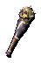 | Schädelgekrönter Keule | Des Teufels Lohn +2 | ab SoD Kapitel 10 |
Diese Waffe hat einen schwarzen Metallgriff, der in den schmalen Schädel gewachsen zu sein scheint, der am oberen Ende befestigt ist. Das Metall sieht so aus, als ob es aus dem Schädel gewachsen sei, und Stachel bohren sich durch die Augenlöcher, den Kiefer und die Schädeldecke selbst.
Das „Metall“ ist überhaupt keines, sondern der Überrest des Unterarms eines Wesens, das von unten durch den Schädel eines Scheusals getrieben wurde, der nun den Kopf der Waffe schmückt. Die Stachel, die sich durch den Schädel gebohrt haben, scheinen so eine Art Federkiele aus dem Unterarm des Wesens zu sein. Wenn diese Waffe im Kampf eingesetzt wird, durchdringen die Stachel der Keule die Haut des Wesens, und aus den Federkielen rinnt Säure entweder in das Opfer oder den Träger der Waffe, wodurch zusätzlicher Schaden entsteht. Der gebräuchliche Name für diese Waffe ist „Des Teufels Lohn“. Auf wen oder welches Ereignis sich das bezieht, ist nicht bekannt, aber es muss offensichtlich eine schmerzvolle Erfahrung für beide Beteiligten gewesen sein. EIGENSCHAFTEN: Kann nur durch „Fluch brechen“ wieder abgenommen werden. RK-Bonus: -2 gg. Stichwaffen RK-Bonus: -2 gg. Geschosswaffen Bei jedem Treffer erleidet entweder das Opfer oder der Träger 1W6 Schadenspunkte durch Säure. ETW0-Bonus: -2 Schaden: 1W6 +2 (Wucht) Initiativefaktor: 4 Fertigkeit: Keule Typ: 1-händig Mindeststärke: 5 Gewicht: 3 |
| 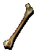 | Scheusalsknochen-Keule | Scheusals-Oberschenkelknochen +2 | ab BG2:SvA Kapitel 6 |
Dieser Tanar'ri-Oberschenkelknochen weist in seinem Mark die letzten Spuren der Essenz eines Balors auf. Seitdem er in der Schlacht Schande davongetragen hatte und von seinen Scheusalbrüdern in einer zeremoniellen Exekution zerrissen worden war, trägt der Knochen einen rachedürstigen Hass auf alle seiner Art mit sich herum.
Wenn der Knochen einen Tanar'ri oder Baatezu trifft, wachsen aus der gesamten Länge des Knochens gezackte Zähne, die einem Tanar'ri oder Baatezu üblen Schaden zufügen. EIGENSCHAFTEN: ETW0-Bonus: +2, +3 gg. Dämonen und Teufel Damage: 1W6 +2 (Wucht) 1W6 +3 gg. Dämonen und Teufel Initiativefaktor: 4 Fertigkeit: Keule Typ: 1-händig Mindeststärke: 5 Gewicht: 4 |

| Stachelige Keule | Nesselkeule | ab BG1 Kapitel 5 |
Diese Keule scheint aus einer Art stacheliger Pflanze hergestellt zu sein. Der Kopf der Keule ist mit kleinen Dornen verziert, die leicht abgebrochen werden können.
Diese Keule ist eine der beliebtesten Waffen unter Dieben. Bei einem erfolgreichen Treffer verhaken sich winzige Schwarzstacheldornen in der Haut des Opfers und bewirken, dass es eine kurze Zeitlang desorientiert wird. Dadurch hat der Dieb Zeit, das Opfer sicher auszurauben und zu entkommen. EIGENSCHAFTEN: Bei jedem Treffer wird das Ziel für 1 Runde verwirrt (Rettungswurf gg. Zauber). ETW0-Bonus: -2 Schaden: 1W6 (Wucht) Initiativefaktor: 3 Fertigkeit: Keule Typ: 1-händig Mindeststärke: 5 Gewicht: 4 |

| Stachelkeule | Stichkeule +1 | ab SoD Kapitel 8 |
Dies ist eine schwere Eisenkeule voller scharfer Stacheln.
Diese Keule ist so verzaubert worden, dass sie mit größerer Genauigkeit verwendet werden kann. EIGENSCHAFTEN: ETW0-Bonus: -3 Schaden: 1W6 (Wucht) 1W6 (Stich) Initiativefaktor: 6 Fertigkeit: Keule Typ: 1-händig Mindeststärke: 8 Gewicht: 12 |
Streitkolben
| Symbol | Name (nicht identifiziert) | Name (identifiziert) | Verfügbarkeit | Beschreibung |
|---|---|---|---|---|
| 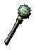 | Übungskeule | Blinder Schrecken +2 | ab SoD Kapitel 8 |
Wenn ein Gegner mit genügend Kraft getroffen wird, wird Säure durch die schwammartige Oberfläche der Keule abgesondert. Durch diesen Säureregen kann der Gegner zeitweilig erblinden, wodurch er leichter zu treffen ist.
EIGENSCHAFTEN: Bei jedem Treffer wird das Ziel für 6 Sekunden geblendet (Rettungswurf gg. Zauber). ETW0-Bonus: -2 Schaden: 1W6 +3 (Wucht) Schadensbonus: +2W4 (Säure) Initiativefaktor: 5 Fertigkeit: Streitkolben Typ: 1-händig Mindeststärke: 10 Gewicht: 4 |
| 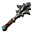 | Streitkolben | Baatezu-Streitkolben +1 | ab BG1 Kapitel 5 |
Dieser Streitkolben ist aus einem Erz geschaffen, dass es nur in den Ödländern von Avernus gibt. Die Baatezu haben daraus ein Metall namens „Baatorianischem Grünstahl“ entwickelt. Waffen aus diesem Metall sind leichter und stärker als jene, die aus gewöhnlichem Metall geschmiedet wurden, und verursachen in der Regel einen größeren Schaden. Obwohl diese Waffen während der Blutkriege in großen Mengen produziert wurden, findet man sie nur selten außerhalb Baators.
EIGENSCHAFTEN: ETW0-Bonus: -1 Schaden: 2W4 +2 (Wucht) Initiativefaktor: 6 Fertigkeit: Streitkolben Typ: 1-händig Mindeststärke: 10 Gewicht: 10 |

| Streitkolben | Tod des Verlangens +2 | ab BG2:SvA Kapitel 3 |
Dieser Streitkolben wird von den Staubmenschen zum Ausschalten jeglichen Verlangens der Lebenden verwendet.
EIGENSCHAFTEN: Lebende Wesen werden bei jedem Treffer für 1 Runde betäubt (Rettungswurf gg. Zauber). ETW0-Bonus: -2 Schaden: 1W6 +3 (Wucht) 1W6 (Stich) Initiativefaktor: 5 Fertigkeit: Streitkolben Typ: 1-händig Mindeststärke: 10 Gewicht: 11 |

| Streitkolben | Der Rechtfertiger +2 | ab SoD Kapitel 10 |
Dieser Streitkolben sieht genau wie jeder andere aus - eine stachelige Kugel an einem hölzernen Schaft sowie einem Lederhandgriff mit Lederriemen, um zu verhindern, dass man ihn in der Hitze des Kampfes verliert. Anders ist nur das Auge, das mit Säure auf den Kopf der Waffe geätzt wurde, ein stilisiertes Siegel des Gottes Horus.
Diese Waffe ist der Rechtfertiger, ein Streitkolben, der in der Stadt Heliopolis auf der Ebene Arkadien hergestellt und so entworfen wurde, dass er den Anhängern des Guten hilft und die Anhänger des Bösen verstümmelt. Er kann seinen Besitzer bei Bedarf heilen und hegt einen besonderen Hass auf die Kräfte des Chaos und des Bösen. EIGENSCHAFTEN: Regeneration: 1 Trefferpunkt pro Runde ETW0-Bonus: +2, +4 gg. chaotisch böse Wesen Schaden: 1W6 +3 (Wucht) 1W6 +5 gg. chaotisch böse Wesen Initiativefaktor: 5 Fertigkeit: Streitkolben Typ: 1-händig Mindeststärke: 10 Gewicht: 4 |
Morgensterne
| Symbol | Name (nicht identifiziert) | Name (identifiziert) | Verfügbarkeit | Beschreibung |
|---|---|---|---|---|

| Morgenstern | Himmel und Erde +4 | ab BG2:TdB Kapitel 9 |
Eine furchterregende Aura der Macht geht von dieser massiven Waffe aus. Scharfe, kraftvolle Linien zieren den Schaft dieses Morgensterns, die direkt in eine perfekte Kugel münden, die als Kontaktpunkt dieser Waffe dient. Von der perfekt geformten Kugel gehen perfekt gekrümmte Stacheln aus, die ein Bild ergeben, das gleichzeitig fesselnd und ehrfurchtgebietend ist. Ein leuchtendes, königliches Violett umgibt diese Waffe der Macht.
Wenn man die Waffe in der Hand hält, ist sofort klar, dass nur diejenigen, die reinen Herzens sind, sie wirklich führen können. EIGENSCHAFTEN: Stärke: +2 ETW0-Bonus: -4 Schaden: 2W4 +4 (Wucht) Schadensbonus: +4 (Wucht) Initiativefaktor: 3 Fertigkeit: Flegel/Morgenstern Typ: 1-händig Mindeststärke: 10 Gewicht: 6 |
Langschwerter
| Symbol | Name (nicht identifiziert) | Name (identifiziert) | Verfügbarkeit | Beschreibung |
|---|---|---|---|---|

| Strahlendes Langschwert | Himmelsfeuer +3 | ab BG2:TdB Kapitel 8 |
Das “Himmelsfeuer“ ist das einzige, was Trias noch an die Oberen Ebenen erinnert. Diese schwere Klinge fühlt sich warm an, und entlang der Oberfläche der Klinge sind Flammen eingraviert. Die Feinheit dieser Gravuren ist atemberaubend und mit solcher Meisterhaftigkeit gearbeitet, dass das Schwert aus metallischen Flammen zu bestehen scheint… Jemand muss Jahrhunderte daran gearbeitet haben. Das Metall der Klinge kommt dir nicht bekannt vor… es ist schwer, aber glänzt wie Silber.
Das Schwert sieht aus, als wär es schon Tausende von Jahren alt. Ein leichtes Summen lässt sich in ihm spüren, und die Schwingungen werden stärker, wenn es menschliches Fleisch berührt. Es überrascht einen nicht, dass das „Himmelsfeuer“ nur von Trägern mit ausreichender Stärke und Reinheit des Herzens verwendet werden kann. Im Zweikampf geht von dem „Himmelsfeuer“ plötzlich eine heilige Strahlung aus, die sämtlichen bösen Wesen, die es im Kampf trifft, verbrennt. EIGENSCHAFTEN: RK-Bonus: -2 Widerstand gg. Klingenwaffen: +10 % ETW0-Bonus: +3, +5 gg. böse Wesen Schaden: 2W6 (Klinge) Schadensbonus: +10 Feuerschaden gg. böse Wesen Initiativefaktor: 2 Fertigkeit: Langschwert Typ: 1-händig Mindeststärke: 12 Gewicht: 10 |

| Langschwert | Dûrgaläd +3 | ab BG2:SvA Kapitel 6 |
Diese prächtige Waffe wurde von den Dunkelelfen Svartalfheims in Nidavellir, der dritten Ebene von Ysgard, geschmiedet. Sie besteht aus Mithril, und uralte Drowmagie verleiht ihr den Glanz der Höhlen von Svartalfheim. Das Schwert wurde ursprünglich Garadun aus Sigil für seine Tapferkeit verliehen, als er den Svartalfheimern im Kampf gegen dämonische Riesenfledermäuse beistand.
Die Waffe ermöglicht es dem Träger, die wahre Natur aller Dinge zu erkennen, indem sie jegliche Illusionen und Täuschungen beseitigt, die andernfalls den Unachtsamen in die Irre führen würden. EIGENSCHAFTEN: Wahrer Blick (1x täglich) Reichweite: Anwender Dauer: 1 Phase Bereich: 36,5 m Radius Identifizieren (3x täglich) Bereich: 1 Gegenstand Bei jedem Treffer werden Illusionszauber des Ziels und illusionäre Duplikate gebannt. ETW0-Bonus: +3 Schaden: 1W8 +3 (Klinge) Initiativefaktor: 2 Fertigkeit: Langschwert Typ: 1-händig Mindeststärke: 6 Gewicht: 3 |
Bastardschwerter
| Symbol | Name (nicht identifiziert) | Name (identifiziert) | Verfügbarkeit | Beschreibung |
|---|---|---|---|---|
| 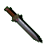 | Bastardschwert | Abigail +1 | ab BG1 Kapitel 5 |
Diese Klinge wurde für einen genau definierten Zweck erschaffen: Schleim jeder Art auszulöschen. Die extrem scharfe Klinge wurde aus alchemisch verstärktem schwarzen Obsidian gefertigt, der härter als Stahl und unempfindlich gegenüber der ätzenden Wirkung von Schleim oder verwandten Wesen ist.
Über die Ursprünge der Klinge ist nicht viel bekannt. Es sind weder Geschichten über Abenteurer überliefert, die Horden von Gallertmonstern erschlagen, welche eine Siedlung bedrohen, noch Gerüchte über Helden, die im Alleingang schleimbefallene Höhlen säubern. Das Beseitigen von Schlick- und Schleimmonstern kann eben nicht mit dem Bezwingen von Drachen mithalten. EIGENSCHAFTEN: Werden Schlicke, Schleime oder Gallertmonster getroffen, werden diese sofort zerstört (Rettungswurf gg. Tod). ETW0-Bonus: -1, -3 gg. Schlicke, Schleime und Gallertmonster Schaden: 2W4 +1 (Klinge) 2W4 +4 gg. Schlicke, Schleime und Gallertmonster Initiativefaktor: 7 Fertigkeit: Bastardschwert Typ: 1-händig Mindeststärke: 10 Gewicht: 10 |

| Bastardschwert | Dämonenbrand +2 | ab SoD Kapitel 10 |
Dämonenbrand wurde ursprünglich von den Tanar'ri für den endlosen Blutkrieg geschmiedet, der über unzählige Existenzebenen tobte. Die Waffe wurde an vielversprechende Anwärter für höhere Ränge oder Söldner vergeben, die sich im Kampf beweisen wollten.
Die Magie der Waffe zwingt den Träger, den Griff des Schwerts fest zu umklammern, aus der man sich nur durch göttliche Fügung oder mit dem Zauber „Fluch brechen“ befreien kann. Die wahre Gefahr der Waffe wird allerdings erst im Kampf selbst offenbar. Jeder erfolgreicher Treffer löst einen Adrenalinschub aus, der so intensiv ist, dass der Träger in einen regelrechten Blutrausch verfällt und versucht, einen weiteren Treffer zu erzielen. Als weiterer Anreiz zu Höchstleistungen wird der Träger bei einem kritischen Treffer mit Lebensenergie des Angriffsziels belohnt und bei einem kritischen Fehlschlag mit Selbstverletzung bestraft. EIGENSCHAFTEN: Kann nur durch „Fluch brechen“ wieder abgenommen werden. Bei jedem kritischen Treffer wird „Entzug von Lebenskraft“ auf das Ziel gewirkt (kein Rettungswurf). Bei jedem kritischen Fehlschlag nimmt der Träger 1d4 Punkte Klingenschaden (kein Rettungswurf). Bei jedem erfolgreichen Treffer verfällt der Träger in einen Blutrausch (Rettungswurf gg. Zauber). Dauer: 1 Runde Effekte: ETW0-Bonus: -2 Schadensbonus: +2 RK-Malus: +2 RW-Malus: +2 gg. Zauber Der Träger ist immun gegen Panik. Der Träger verfällt in Raserei. ETW0-Bonus: -2 Schaden: 2W4 +2 (Klinge) Initiativefaktor: 6 Fertigkeit: Bastardschwert Typ: 1-händig Mindeststärke: 11 Gewicht: 9 |
Krummsäbel
| Symbol | Name (nicht identifiziert) | Name (identifiziert) | Verfügbarkeit | Beschreibung |
|---|---|---|---|---|
| 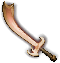 | Krummsäbel | Thanatos +2 | ab BG2:SvA Kapitel 6 |
Dieser Krummsäbel wurde einst vom Kalifen Jassan der Dschinn geführt. Sie ging um -6155 TZ in einem Gefecht mit plündernden Nabassu-Dämonen verloren. Seitdem war die Waffe für Jahrtausende verloren und geriet in Vergessenheit. Um 367 TZ wurde sie von einer erfahrenen Gruppe Ebenenreisender an den Ufern des Flusses Styx in Thanatos, der 333. Ebene des Abyss, wiederentdeckt, die gleichzeitig zum neuen Namensgeber der Waffe wurde.
Nachdem die Waffe so lange im Flussbett von Styx gelegen hatte, nahm sie mit der Zeit einige Eigenschaften des Flusses an. Wenn ein Ziel von der Klinge verletzt wird, dann verursacht sie vorübergehenden oder dauerhaften Gedächtnisverlust, so als ob das Ziel mit dem Wasser des Flusses Styx in Berührung gekommen ist. EIGENSCHAFTEN: Bei jedem Treffer verliert das Ziel 1W4 eingeprägte Zauber und verursacht in 50% aller Fälle für drei Runden entweder „Magie fehlwirken“, „Verwirrung“ oder „Schwachsinn“ (Rettungswurf mit einem Malus von -2 gegen Zauber). ETW0-Bonus: -2 Schaden: 1W8 +2 (Klinge) Initiativefaktor: 3 Fertigkeit: Krummsäbel/Wakizashi/Ninjatō Typ: 1-händig Mindeststärke: 8 Gewicht: 4 |
Kampfstäbe
| Symbol | Name (nicht identifiziert) | Name (identifiziert) | Verfügbarkeit | Beschreibung |
|---|---|---|---|---|
| 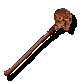 | Kampfstab | Lebloser Gefährte +2 | ab BG2:SvA Kapitel 2 |
Der Griff des Kampfstabs sieht ganz normal aus. Der hinzugefügte Schädel scheint allerdings wirklich einzigartig zu sein. Er war einmal das Eigentum von Lothar, dem Herrn der Knochen der Nacht. Zu jener Zeit begegnete er einem anderen Schädel mit einem ungewöhnlich großen Repertoire an Beleidigungen, mit denen er ständig die anderen Schädel (und auch seinen Herrn, wenn er außer Hörweite war) überschüttete. Einige seiner Beleidigungen hinterließen einen so starken Eindruck, dass der Schädel dieses Kampfstabs sie auf Befehl wiederholt. Gegner, die diese Beleidungen hören, werden dadurch so sehr gereizt, dass sie ihre Abwehr sinken lassen und einer Art Raserei verfallen.
EIGENSCHAFTEN: Litanei der Flüche (3x täglich) Effekt: Raserei, -2 Malus auf Rüstungsklasse, Rettungswürfe, ETW0 und Schaden Dauer: 1 Phase Bereich: Alle gegnerischen Humanoide und riesigen Humanoide in 4,5 m Radius. Taube Wesen sind davon nicht betroffen. Rettungswurf: Ja (-2 gg. Zauberstäbe) ETW0-Bonus: -2 Schaden: 1W6 +2 (Wucht) Initiativefaktor: 2 Fertigkeit: Kampfstab Typ: 2-händig Mindeststärke: 5 Gewicht: 3 |
Halsketten und Amulette
| Symbol | Name (nicht identifiziert) | Name (identifiziert) | Verfügbarkeit | Beschreibung |
|---|---|---|---|---|
| 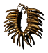 | Knochenhalskette | Stammeshalskette der Rengarth | ab BG2:SvA Kapitel 2 |
Halsketten wie diese wurden vor über 1700 Jahren von den Nomandenstämmen der Rengarth gefertigt. Sie wurden in erster Linie von den Schamanen der Stämme bei Zeremonien und gelegentlich auch als zusätzliche Unterstützung bei ihren Kämpfen mit rivalisierenden Stämmen und der allgegenwärtigen Bedrohung durch das Nesserilreich verwendet.
Diese Halsketten bestehen hauptsächlich aus Knochen, Zähnen und Krallen von Wölfen, Bären, Wildschweinen und weiteren Tierarten und werden von eine starken, aber flexiblen Lederbändern zusammengehalten. Sie verfügen über einige oberflächliche magische Eigenschaften. Die mächtigeren Verzauberungen sind allerdings geheimnisvoll und widerstehen selbst den stärksten hellseherischen Versuchen. Dieses spezielle Exemplar gelangte in den Besitz eines Adligen aus Thultanthar, einer der fliegende Städte des Nesserilreiches, bevor sie in die Schattenebene gezogen wurde. Um 1279 TZ herum kehrte ein Mitglied des Bundes der Schicksalswächter von einer Reise durch die Ebenen mit der Halskette zurück und verkaufte sie wenig später an eine Gruppe Abenteurer in Sigil. Danach verlor sich ihre Spur erneut, bis sie vor kurzer Zeit im Besitz von Ebb Knarrknie auftauchte. Trotz ihres primitiven Aussehens ist die Halskette überraschend gut verarbeitet und scheint Verzauberungen zu besitzen, die sie vor dem Altern schützen. Alle Knochen und Krallen passen nahtlos ineinander, wodurch sie sehr robust, aber gleichzeitig angenehm zu tragen ist. Angesichts ihres barbarischen Erscheinungsbilds könnten Menschen in zivilisierteren Gegenden jedoch Abscheu empfinden, wenn die Halskette offen getragen wird. EIGENSCHAFTEN: Charisma: -1 Druiden, Schamanen und Waldläufer sind von Tieren unauffindbar Tiere bezaubern (3x täglich) Reichweite: 18,5 m Dauer: 120 Sekunden Bereich: 1 Wesen Rettungswurf: Ja (gg. Zauber) Gewicht: 2 |
Ringe
| Symbol | Name (nicht identifiziert) | Name (identifiziert) | Verfügbarkeit | Beschreibung |
|---|---|---|---|---|

| Ehrfurchtgebietender Ring | Ägide des Schreckens | ab BG2:TdB Kapitel 9 |
Reihe um Reihe winziger Schädel ziehen sich an der Außenseite dieses Rings entlang. Er wird von einem übergroßen Schädel mit feuerroten Edelsteinen als Augen gekrönt. Dieser Ring ist die körperliche Manifestation des Leidens der gepeinigten Sklaven von Dahnthur. Es war ihr größter Wunsch, vor ihren Unterdrückern beschützt zu werden, und mit diesem magischen Ring wurde ihr Wunsch letztendlich erfüllt. Trotz der feuerroten Edelsteine entströmt ihm ein königlich-violetter Farbton.
EIGENSCHAFTEN: RK-Bonus: -3 Trefferpunkte: +15 Konstitution: +3 Gewicht: 0 |

| Gezackter Ring | Mempas Beißender Ring | ab BG2:SvA Kapitel 6 |
Mempa war eine Magierin, die von dem Gedanken besessen war, ihre magischen Gegenstände könnten verlorengehen oder gestohlen werden, während sie schlief oder sie sich aus irgendeinem anderen Grund nicht dagegen wehren konnte. Während der Großteil ihrer tragbaren Besitztümer von ihrer Leiche untrennbar war und deshalb mit ihr begraben wurde, blieben einige schwächere Gegenstände - vielleicht frühe Experimente - in der Welt der Lebenden zurück.
Mempas Beißender Ring, dessen mächtige Aura seinen Träger vor körperlichem Schaden schützt, ist einer dieser Gegenstände. Wenn der Ring jedoch erst einmal auf den Finger gezogen ist, beißt er sich dermaßen hartnäckig fest, dass es fast unmöglich ist, ihn wieder vom 'gebissenen' Finger abzuziehen. EIGENSCHAFTEN: Kann nur durch „Fluch brechen“ wieder abgenommen werden. RK-Bonus: -2 Gewicht: 0 |

| Einfacher Silberring | Gehraises Ring | ab BG1 Kapitel 5 |
Dieser kleiner Silberring sieht so aus, als gehöre er an den Finger einer Frau. Er fühlt sich leicht warm an und hat die Fähigkeit, die Wirkung von Gift aufzuheben, das in den Blutkreislauf des Trägers gelangt ist.
EIGENSCHAFTEN: RW-Bonus: -3 gg. Tod Die Trägerin ist immun gegen Gift. Gewicht: 0 |
| 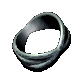 | Ring | Verschlungener Ring | ab BG1 Kapitel 1 |
Dieser Ring sieht aus wie drei Ringe, die miteinander verschlungen wurden. Schon ihn anzusehen macht euch ganz schwindlig.
EIGENSCHAFTEN: RK-Bonus: -1 Gewicht: 0 |

| Auffälliger Ring | Ring des Reisenden | ab SoD Kapitel 8 |
Diese Ringe sind auf den Ebenen ziemlich gebräuchlich. Sie sind einfach herzustellen und werden viel nachgefragt, und daher schaffen Magier diese Gegenstände in der Regel als Mittel, um schnell Geld zu machen. Dieser Ring hier hat eine geringe Verzauberung, die den Träger vor Schaden beschützt.
EIGENSCHAFTEN: RK-Bonus: -1 RW-Bonus: -1 Gewicht: 0 |

| Liebesring | Verschiebungsring | ab BG2:SvA Kapitel 2 |
Dieser Ring wurde aus dem Blut eines Verschiebungstieres geschaffen und kann die Kraft jeder normalen Waffe teilweise umleiten. Dadurch ist der Träger des Ringes schwerer zu treffen und nimmt im Trefferfall weniger Schaden als üblich.
EIGENSCHAFTEN: RK-Bonus: -2 Widerstand gg. Klingenwaffen: +5 % Widerstand gg. Stichwaffen: +5 % Widerstand gg. Wuchtwaffen: +5 % Widerstand gg. Geschosswaffen: +5 % Gewicht: 0 |
| 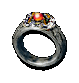 | Ring | Ring der nahezu vollständigen Unsichtbarkeit | ab SoD Kapitel 8 |
Dies ist Yevrahs Ring der nahezu vollständigen Unsichtbarkeit. Er macht seinen Träger unsichtbar - beinahe jedenfalls. Manchmal kommt sein Besitzer für kurze Zeit der Unsichtbarkeit *wirklich* durchaus nahe, was auf eventuelle Angreifer in der Regel beunruhigend wirkt. Dadurch wird es schwieriger, den Träger des Rings im Kampf zu treffen.
EIGENSCHAFTEN: RK-Bonus: -1 Gewicht: 0 |

| Festivalpreis | Schlangenring | ab BG2:TdB Kapitel 8 |
Dies scheint eine Art Babyschlange zu sein, die in Form eines Ringes gefroren worden ist. Ihre Augen glitzern und wirbeln wie Juwelen und scheinen sich manchmal sogar zu bewegen.
EIGENSCHAFTEN: Der Träger ist immun gegen Gift. Magiewiderstand: +15 % RW-Bonus: -2 gg. Zauber Gewicht: 0 |

| Ring | Ring von Thex | ab BG2:TdB Kapitel 9 |
Dieser verzierte Silberring ist mit einem einzigen roten Stein unbekannten Typs geschmückt. Der Ring soll von einer abenteuerlustigen Magierin namens Thex hergestellt worden sein. Thex behauptete, dass sie müde sei, auf ihrem Hintern zu sitzen und Zaubersprüche auf Feinde zu schleudern, während der Rest ihrer abenteuerlustigen Gruppe sich mitten in die Schlacht werfen konnte. Sie dachte, dass sie mit dem Ring das werden könnte, was sie eine Schlachtmagierin nannte. Der Ring von Thex war der krönende Abschluss ihrer kurzen Karriere.
EIGENSCHAFTEN: RK-Bonus: -4 RW-Bonus: -2 Trefferpunkte: +20 Weisheit: -1 Gewicht: 0 |
| 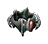 | Erlesener Ring | Ring Null | ab BG2:TdB Kapitel 9 |
Dieser exquisite Ring stammt von einem Helden der Antike aus dem Jahr von Gii 'on (AC195). Er ist kunstvoll geschnitzt und hat spitze Kanten. Der Ring besteht aus einem nicht identifizierbaren Metall mit einem Mittelstein, der sich eiskalt anfühlt. Er strahlt eine mächtige Aura aus, die seinen Träger vor körperlichen Schäden schützt und ihn empfindlicher für die Auswirkungen des Gewebes macht - was ein Segen oder ein Fluch sein kann.
EIGENSCHAFTEN: RK-Bonus: -3 Intelligenz: +3 Magiewiderstand: -15 % RW-Bonus: +3 gg. Zauber Magierzauber: +1 (Grad 1 bis 9) Gewicht: 0 |
Ohrringe (können im Feld für Amulette platziert werden)
| Symbol | Name (nicht identifiziert) | Name (identifiziert) | Verfügbarkeit | Beschreibung |
|---|---|---|---|---|

| Ohrringe | Bernsteinohrringe | ab BG2:SvA Kapitel 3 |
Diese Ohrringe sind aus dem gehärteten Saft der Klingenrebe hergestellt. Wenn diese Substanz richtig präpariert wird, können Gegenstände aus ihr mit mächtigen Schutzzaubern belegt werden.
EIGENSCHAFTEN: RK-Bonus: -2 Magierzauber: +2 (Grad 1) Gewicht: 0 |
| 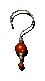 | Ohrringe | Purpurrote Sphärenohrringe | ab SoD Kapitel 8 |
Diese kleinen, rote Edelsteine, die in den Ohrringen gefasst sind, funktionieren wie eine Art Hitzeschwamm und schützt den Träger vor Hitze oder Feuerangriffen. Wenn der Träger Feuer ausgesetzt ist, nehmen die Edelsteine einen Teil der Hitze auf und schirmen den Träger so teilweise vor Schaden ab.
Es geht das Gerücht, dass jeder der Ohrringe einen winzigen Feuermephiten enthält und daher nach Hitze dürstet, die er gierig aus jedem Feuer in der Nähe trinkt. Dies ist nie bewiesen worden, vor allem deshalb, weil niemand sich die Mühe macht, die Sache zu untersuchen. EIGENSCHAFTEN: Feuerwiderstand: +20 % Gewicht: 0 |

| Ohrringe | Staubmenschen-Ohrringe | ab BG2:SvA Kapitel 2 |
Diese Ohrringe riechen nach Asche und Staub und fühlen sich eiskalt an. Die Ohrringe beschützen den Träger vor extremen Temperaturen und verleihen ihm eine teilweise Widerstandsfähigkeit gegen Hitze und Kälte. Außerdem schützen die Ohrringe den Träger gegen Zauberkräfte, die den Geist beeinflussen oder den Körper angreifen, wie beispielsweise Lähmung oder Todeszauber.
Die Ohrringe sind ein Zeichen für die Verbundenheit des Trägers mit den Staubmenschen. Gerüchten zufolge helfen die Ohrringe den Staubmenschen, sich gegen die Wirkungen der Außenwelt abzustumpfen. EIGENSCHAFTEN: Feuerwiderstand: +30 % Kältewiderstand: +30 % RW-Bonus: -2 gg. Tod Gewicht: 0 |
| 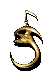 | Ohrringe | Unabhängigen-Ohrringe | ab BG2:SvA Kapitel 3 |
Diese stacheligen Ohrringe machen den Träger als ein Mitglied des Bundes der Unabhängigen (der Freien Liga) kenntlich. Diese Ohrringe sind der Sitz eines unabhängigen Geistes, der den Träger begleitet und sein Bestes tut, ihn vor Schaden zu beschützen. Immer, wenn es möglich ist, gibt der Geist dem Träger einen mentalen Stoß, um ihn aus dem Kreuzfeuer zu bekommen… Dieser winzige Beratergeist gewährt dem Benutzer +1 auf alle Rettungswürfe, und seine bloße Anwesenheit gibt dem Träger einen zusätzlichen Bonus zum Bannen von Zaubersprüchen und verwirrenden Auswirkungen.
Viele dieser verzauberten Gegenstände wurden auf dem Basar von Sigil von einem Silberschmied aus Oerth hergestellt, der einen Weg gefunden hatte, das Metall so zu formen, dass es „freie Geister“ anzog und sie dazu verleitete, im Metall ihren Wohnsitz einzurichten. Der Geist ist in keiner Weise an die Ohrringe gebunden. Soweit die Gelehrten herausfinden konnten, haben die Ohrringe für den Geist irgend etwas „Behagliches“. EIGENSCHAFTEN: Der Träger ist immun gegen Verwirrung. RK-Bonus: -1 RW-Bonus: -1 RW-Bonus: -1 gg. Zauber Gewicht: 0 |

| Ohrringe | Ohrringe der verketteten Zähne | ab BG1 Kapitel 1 |
Diese schlanken Metallohrringe stellen eigentlich eine Reihe hervorragend gearbeiteter Dietriche dar. Bei Bedarf kann man sie auseinander haken, um damit widerspenstige Schlösser zu öffnen.
EIGENSCHAFTEN: Schlösser öffnen: +5 % Gewicht: 0 |
| 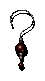 | Ohrringe | Obsidian-Ohrringe | ab BG1 Kapitel 5 |
Diese kleinen Ohrringe bestehen aus poliertem Obsidian. Trotz der Glätte ihrer Oberfläche reflektieren sie überhaupt kein Licht.
Die schwarzen Edelsteine in diesen Ohrringen werden in der Regel als „der beste Freund eines Gauners“ bezeichnet und besitzt magische Eigenschaften, die das Licht absorbieren, wodurch sich der Träger leichter unentdeckt im Schatten bewegen kann. EIGENSCHAFTEN: Im Schatten verstecken: +10 % Leise bewegen: +10 % Gewicht: 0 |

| Segmentierte Ohrringe | Stachelohrringe | ab SoD Kapitel 8 |
Diese Ohrringe bestehen aus dem gehärteten Panzer eines segmentierten, larvenähnlichen Wesens. Der Panzer wurde mit einer Art Glasierung behandelt, die ihn irritierend lebendig erscheinen lässt. Der Draht, mit dem die Ohrringe am Ohr befestigt werden, sieht aus wie ein Teil der Larve selbst, vielleicht ihr Stachel oder Fühler.
Um die Kraft der Ohrringe zu aktivieren, muss der Träger seinen Daumen an dem Stachel stechen und ihm so die Bindung mit seinem neuen Besitzer ermöglichen. Wenn die Ohrringe „aufgeweckt“ wurden, helfen sie, den Träger vor Angriffen zu schützen, und verleihen der Haut des Trägers dieselbe Stärke und Widerstandskraft wie die eines Larvenpanzers. EIGENSCHAFTEN: RK-Bonus: -2 gg. Stichwaffen RK-Bonus: -4 gg. Geschosswaffen Gewicht: 0 |
Armbänder und Armschienen (können im Feld für Armschützer und Handschuhe platziert werden)
| Symbol | Name (nicht identifiziert) | Name (identifiziert) | Verfügbarkeit | Beschreibung |
|---|---|---|---|---|

| Armreif | Glockenschild | ab BG2:TdB Kapitel 9 |
Die Gravuren auf diesem Armband sind einfach nur schön. Die Handwerkskunst spiegelt die handwerkliche Arbeit der Meh 'gahmi Sah 'ma Nomadenstämme wider. Dieser Armreif wurde für die größte Krieger-Priesterin, Bell, geschnitzt, die den Frieden in die südlichen Ebenen bringen wollte. Die bezaubernden violetten Steine, die entlang des Armreifs eingesetzt sind, strahlen ein weiches, warmes, königliches violettes Licht aus.
EIGENSCHAFTEN: Weisheit: +3 Magiewiderstand: +10 % Trefferpunkte: +10 Priesterzauber: +1 (Grad 1 bis 6) Gewicht: 0 |
| 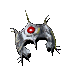 | Armreif | Magus-Schutz | ab SoD Kapitel 8 |
Armbänder wie diese gehören zur Standardausrüstung jedes abenteuerlustigen Zauberkundigen und sind fast überall auf den Ebenen zu finden. Dem Muster nach scheint dieses spezielle Armband in einem in Sigil verbreiteten Stil gefertigt worden zu sein. Die verschiedenen Glyphen der Abwehr, die kunstvoll entlang der Oberfläche eingraviert wurden, haben eine beinahe hypnotische Wirkung auf den Betrachter. Diese Armbänder schützen den Träger vor normalen Angriffen - so, als ob er eine Lederrüstung tragen würde.
EIGENSCHAFTEN: Rüstungsklasse: 6 Gewicht: 2 |
| 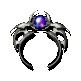 | Armreif | Magus-Schild | ab BG2:SvA Kapitel 2 |
Dies ist eine Variante des Magus-Schutzes. Mit praktisch denselben Zaubern und Glyphen wie sein Vorgänger kann der Magus-Schild die Energie der Verzauberung, die auf ihm liegt, noch besser konzentrieren.
EIGENSCHAFTEN: Rüstungsklasse: 4 Gewicht: 2 |

| Stacheliger Armreif | Schreckensband | ab SoD Kapitel 10 |
Der Legende nach wurde dieses Armband von Nacek dem Sadistischen erschaffen. Seine gesamte Oberfläche ist mit winzigen rasierklingenscharfen Stacheln übersät, aus denen geringe Mengen seltener Reagenzien in den Blutstrom des Trägers injiziert werden. Diese Substanzen bewirken, dass der Träger einen unablässigen Adrenalinstoß der Stärke empfindet.
EIGENSCHAFTEN: Der Träger ist immun gegen Panik. Stärke: +1 Gewicht: 3 |

| Gestachelte Handschuhe | Gestachelte Ogerkrafthandschuhe | ab BG2:SvA Kapitel 6 |
An den Fingerknöcheln dieser Handschuhe entlang verläuft eine Reihe riesiger schwarzer Stacheln, mit denen der Träger jedes Ziel durchlöchern kann, gegen das er mit ihnen schlägt. An den Säumen der Handschuhe befinden sich Klammern, als ob sie damit beim Tragen gesichert werden sollen.
Diese Handschuhe besitzen einen Zauber, mit dem der Träger Gegner mit der Kraft von zehn Männern schlagen kann. Durch die Stacheln wird der Gegner nicht nur verwundet, sondern auch gedemütigt, denn wenn die Knochen des Opfers nicht durch den Angriff völlig zerschmettert werden, verblutet es langsam an den ausgefransten Wunden, die durch die Stacheln verursacht werden. EIGENSCHAFTEN: ETW0-Bonus: -2 im waffenlosen Kampf Schadensbonus: +1W4 +2 Wuchtschaden im waffenlosen Kampf +1W4 +2 Stichschaden im waffenlosen Kampf Gewicht: 2 |

| Modeschmuck | Spinnenarmband | ab BG2:SvA Kapitel 2 |
Tatsächlich ist dies eine lebende Spinne, kein Schmuckstück. Wenn man sie am Handgelenk anlegt, versenkt die Spinne ihre Beißwerzkeuge im Fleisch des Trägers und ernährt sich von ihrem Wirt, wodurch beide positive, aber auch negative Auswirkungen erfahren.
EIGENSCHAFTEN: Widerstand gg. Klingenwaffen: +5 % Widerstand gg. Stichwaffen: +5 % Widerstand gg. Wuchtwaffen: +5 % Widerstand gg. Geschosswaffen: +5 % Trefferpunkte: +10 Intelligenz: -1 Weisheit: -1 Gewicht: 0 |
| 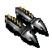 | Glänzende Armschützer | Armschienen der Abwehr von Bösem | ab BG1 Kapitel 5 |
Diese Armschienen schützen ihren Träger vor Angriffen von bösen Wesen. Ihre metallisch glänzenden Rüstungsteile sind mit Schutzrunen versehen, die den Schaden auf die Armschienen lenken, wo er harmlos abprallt. Angriffe, die sich nicht direkt auf den Träger richten, sind davon nicht betroffen.
Es wird vermutet, dass die Armschienen aus gefallenen Seelenwanderern von Arkadien geformt wurden und ihr Verlangen, das Böse zu bekämpfen, noch immer in dem Gegenstand fortbesteht. Diese Theorie wird durch die Tatsache gestützt, dass böse Wesen alle zehn Runden Schaden erleiden, während sie diese Armschienen tragen. EIGENSCHAFTEN: RK-Bonus: -2 gg. böse Wesen RW-Bonus: -2 gg. böse Wesen Wesen böser Gesinnung erleiden alle 10 Runden 2W8 nicht-tödlichen Schaden, solange sie die Armschienen tragen (Rettungswurf gg. Tod für halben Schaden). Gewicht: 2 |
Mäntel
| Symbol | Name (nicht identifiziert) | Name (identifiziert) | Verfügbarkeit | Beschreibung |
|---|---|---|---|---|
| 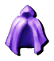 | Umhang mit Kapuze | Kutte der tiefsten Schatten | ab BG2:SvA Kapitel 6 |
Wie die Kutte selbst, sind auch die Ursprünge dieses Artifakts in Dunkelheit gehüllt. Sie wurde von der Göttin Shar einem Mitglied der Schicksalswächter aus Sigil als Belohnung gewährt, da er eine Gruppe von Gläubigen Hanali Celanils, der elfischen Göttin der Liebe und Schönheit, hin zu selbstzerstörerischer Vergnügungssucht und Verzweiflung verführt hatte. Die Kutte ging einige Zeit später verloren, nur um gelegentlich kurz im Besitz zweifelhafter Personen, wie Meuchelmörder oder Agenten von Shar, wieder aufzutauchen.
Diese Kutte wurde aus einem unbekannten Material gefertigt und ist überraschend leicht und strapazierfähig. Sie scheint sich mit der unmittelbaren Umgebung so stark zu verschmelzen, dass es schwierig ist, ihre genaue Form und die ihres Trägers zu erkennen. EIGENSCHAFTEN: Im Schatten verstecken: +20 % Leise Bewegen: +20 % Nachtsicht: ETW0-Bonus: -2 (in Verließen und nachts im Freien) Lichtempfindlichkeit: ETW0-Malus: +4 (tagsüber im Freien) Verschwommen: RK-Bonus: -3 gg. Geschosswaffen Ablenkung (1x täglich) Dauer: 12 Runden Bereich: Anwender Gewicht: 1 |
Gürtel
| Symbol | Name (nicht identifiziert) | Name (identifiziert) | Verfügbarkeit | Beschreibung |
|---|---|---|---|---|
| 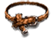 | Modischer Ledergürtel | Anker der Ebenen | ab BG2:SvA Kapitel 6 |
Der Legende nach beschloss der alternde Ebenenwanderer Gojuc, sich nach einer erfolgreichen Karriere als Abenteurer, Söldner und sogar als Abgesandter bei besonderen Anlässen in Sigil, der Stadt der Tore, zur Ruhe zu setzen. Da das Reisen durch die Ebenen seine Spuren hinterließ, ersann er einen Zauber, der ihn immun gegen die Auswirkungen von Teleportationsmagie machen würde, und beauftragte einen einheimischen Gnom, diesen in ein Kleidungsstück seiner Wahl einzuweben. Er war offensichtlich mit dem Ergebnis zufrieden, da er mehrere Jahre ohne Probleme mit den in der Stadt zahlreich verstreuten Portalen leben konnte. Zu seiner Überraschung wurde er eines Tages durch einen verirrten Kieselstein, den einige auf der Straße spielende Kinder geworfen hatten, lebensgefährlich verletzt. Er erlag kurze Zeit später seinen Verletzungen. Der Gürtel und viele andere seiner Habseligkeiten wurden schließlich an einen reisenden Händler verkauft, wodurch sich die Spur des Gegenstands verlor.
Der Gürtel wurde mit einem Zauber belegt, der den Träger an die gegenwärtige Existenzebene bindet. Das hat zur Folge, dass der Träger immun gegen allen Effekte ist, die das Reisen durch die Ebenen ermöglichen. Die verstärkte Bindung an die gegenwärtige Ebene macht den Träger allerdings ebenfalls anfällig für die Haupteigenschaften der Ebene. EIGENSCHAFTEN: Der Träger ist immun gegen: – Irrgarten – Einkerkerung – Teleportation Widerstand gg. Klingenwaffen: -50 % Widerstand gg. Stichwaffen: -50 % Widerstand gg. Wuchtwaffen: -50 % Widerstand gg. Geschosswaffen: -50 % Kann nur durch „Fluch brechen“ wieder abgenommen werden. Gewicht: 2 |
Zauberstäbe
| Symbol | Name (nicht identifiziert) | Name (identifiziert) | Verfügbarkeit | Beschreibung |
|---|---|---|---|---|
| 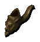 | Pfeife | Pfeife aus dem Abgrund | ab SoD Kapitel 8 |
Dies ist eine kleine, hölzerne Pfeife, die so geschnitzt ist, dass sie dem Kopf eines Dämonen ähnelt.
Wenn diese Pfeife verwendet wird, stößt sie große Wolken tödlicher Dämpfe aus den Ebenen des Abgrunds aus. EIGENSCHAFTEN: Todeswolke: Reichweite: 12 m Bereich: 4,5 m Radius Dauer: 1 Phase Tötet Wesen mit 4 oder weniger Trefferwürfeln, die in den Wirkungsbereich geraten, augenblicklich. Wesen mit 5 oder 6 Trefferwürfeln müssen einen Rettungswurf mit einem Malus von -4 gegen Gift bestehen oder sie werden ebenfalls getötet. Wesen mit mehr als 6 Trefferwürfeln (d. h. mehr als 6 Stufen) erleiden in jeder Runde, in der sie sich im Wirkungsbereich aufhalten, 1W10 Schadenspunkte durch Gift. Mindestintelligenz: 9 Gewicht: 0 |
| 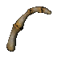 | Fingerknochen | Skelettschlüssel | ab BG1 Kapitel 5 |
Dieser Gegenstand wurde aus den Fingerknochen eines Humanoiden gefertigt. Auf seiner Oberfläche wurden magische Symbole eingraviert, die ihn mit einem Zauber belegen, der alle Arten von Schlössern an Truhen, Kisten oder Türen öffnen kann.
EIGENSCHAFTEN: Klopfen Reichweite: 27,5m (Sichtfeld) Dauer: Sofort Bereich: Ein Gegenstand Mindestintelligenz: 9 Gewicht: 1 |
Verbrauchsmaterialien und Gegenstände mit Ladungen
| Symbol | Name (nicht identifiziert) | Name (identifiziert) | Verfügbarkeit | Beschreibung |
|---|---|---|---|---|
| 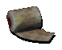 | Bandagen | Bandagen | ab BG1 Kapitel 1 |
Dies ist eine Rolle Bandagen, die zur Stillung kleinerer Wunden nützlich sind. Sie können den Benutzer von 3 Schadenspunkten heilen.
EIGENSCHAFTEN: Heilt 3 Trefferpunkte. Gewicht: 0 |

| Abgeschnittenes Kupferstück | Abgeschnittenes Kupferstück | ab BG1 Kapitel 1 |
Dieses Kupferstück wurde „abgeschnitten“… das meiste Kupfer wurde abrasiert, offensichtlich, damit es noch wie eine Münze aussieht, der „Barbier“ aber aus dem abrasierten Kupfer eine neue Münze machen kann. Obwohl viele Bewohner des Stocks diese Methode des „Geldverdienens“ praktizieren, tun die Anhänger des Bundes des Prädestinats dies mit einer furchterregenden Zweckgebundenheit und erstellen Talismane, die ihre eigene kleinliche Natur widerspiegeln.
Um diese Talismane zu erstellen, suchen die Angehörigen des Bundes des Prädestinats gescheiterte Geschäftsleute und andere Personen auf, die einmal vermögend waren und dann durch einen Schicksalsumschwung in Verzweiflung gestürzt wurden. Diesen Individuen werden dann verzauberte Schnitzklingen gegeben, und sie werden gebeten, für das Prädestinat in einem langwierigen, den ganzen Tag andauernden Ritual, durch das die Kupfermünze mit den letzten Resten ihres früheren Glücks imprägniert werden, „ein Kupferstück abzuschneiden“. Das Ritual sowie die Natur der Person, die das Kupferstück abschneidet, lassen eine kleinere Verzauberung in die Münze sickern und das Geschick desjenigen beeinflussen, der die Münze dann verwendet. Wenn der abgeschnittene Kupfertalisman in die Luft geworfen wird, wird er zu einem Regen von Kupferstücken und bringt dem Anwender etwas Glück. EIGENSCHAFTEN: Kleiner Kupfersegen Glück: +1 Dauer: 1 Phase Der Segen benötigt eine Spende von 11 Goldstücken, um zu wirken. Gewicht: 0 |

| Komplizierter Knoten | Gordischer Knoten | ab BG2:TdB Kapitel 8 |
Der Knoten, der die beiden Enden dieses Seils zusammenhält, enthält einen mächtigen Zauber. Wenn dieser Knoten von einem Kämpfer mit einer scharfen Waffe durchtrennt wird, erfährt der Krieger eine Welle des Selbstbewusstseins und der Arroganz, wodurch seine Weisheit herabgesetzt, sein Charisma jedoch erhöht wird. Der Anwender vespürt außerdem den Drang, eine Armee zusammen zurufen und loszuziehen, um die Reiche zu erobern, aber dieser Drang beherrscht nicht die Handlungsweise des Anwenders.
Man sagt, dass dies ein Stück verknoteten Seils sei, das in einer fernen vergangenen materiellen Welt von einem Eroberer zerschnitten wurde. Jedesmal, wenn der Knoten zertrennt wird, verschwindet er, um Jahre später in den Händen einer anderen Person aufzutauchen, die ihn und seine Macht gebrauchen kann. EIGENSCHAFTEN: Charisma: +2 (permanent) Weisheit: -1 (permanent) Der Knoten verschwindet, nachdem er benutzt wurde. Platziert den Knoten in ein Feld für einsatzbereite Gegenstände. Gewicht: 0 |
| 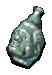 | Seltsame Phiole | Elixier der schrecklichen Trennung | ab BG2:TdB Kapitel 9 |
Dies ist die Phiole mit dem Elixier der Schrecklichen Trennung, das von einer Gelehrten gemischt wurde, die einst eine dunkle Seite an sich entdeckte, eine Seite, die von Zeit zu Zeit die Kontrolle über sie übernahm und sie veranlasste, schreckliche Dinge zu tun. Dieser Trank sollte ihre dunkle Hälfte von der anderen 'abspalten' und zwei getrennte Wesen schaffen. Gnadentöter aus Sigil fanden und exekutierten sie jedoch wegen einer Reihe scheußlicher Morde, bevor sie den Trank anwenden konnte.
EIGENSCHAFTEN: Schreckliche Trennung: When der Trank zu sich genommen wird, dann fängt die Verzauberung an zu wirken. Sie spaltet den weniger dominanten Teil des Anwenders ab, der sich als eigenständiges Wesen mit vergleichbarer Stärke und einer entgegengesetzten Gesinnung manifestiert. Dieses Wesen untersteht 5 Phasen lang der Kontrolle der Gruppe, bevor es sich aus der Verzauberung befreit und entweder flieht oder die Gruppe angreift. Zusätzlich ändert sich die ethische Gesinnung des Nutzers dauerhaft hin zu 'Neutral' (Neutral Gut, Absolut Neutral oder Neutral Böse). Das Elixier zeigt keine Wirkung, wenn die ethische Gesinnung des Nutzers bereits 'Neutral' ist. Gewicht: 1 |

| Reich verziertes Kästchen | Moridors Kästchen | ab SoD Kapitel 8 |
Dies scheint ein kleines Holzkästchen zu sein. Komplizierte Muster, die in Gold geätzt sind, zieren das Kästchen. Irgendwann einmal mag es genug wert gewesen sein, um im Haus eines Aristokraten ausgestellt zu werden. Jahre der Vernachlässigung haben jedoch ihren Tribut gefordert, und es scheint auseinanderzufallen. Mit Ausnahme des großen Edelsteins, der vorn in das Kästchen eingearbeitet ist, ist es wertlos.
Es ist nicht bekannt, was genau in dem Kästchen versiegelt ist. Es kursieren unzählige Geschichten darüber, und keine davon verheißt Gutes für ihren Besitzer. Manche vermuten einen alten Drachen, andere die böse Seele von Moridor selbst darin. Dem schlechten Zustand des Kästchens nach zu urteilen, muss jemand das Siegel bereits untersucht und dabei beschädigt haben. Es ist nur eine Frage der Zeit, bis sich das Siegel vollständig auflöst und das eingesperrte Wesen befreit wird. EIGENSCHAFTEN: Das Öffnen des Siegels befreit das eingesperrte Wesen. Mindestintelligenz: 9 Gewicht: 2 |

| Horn | Bakus Horn | ab SoD Kapitel 8 |
Dieses unscheinbare Holzhorn ist in Wirklichkeit ein magisches Artefakt aus den Oberen Ebenen. Wie der Angriff der namensgebenden Kreatur, fügt Bakus Horn bösen Wesen im Wirkungsbereich Schaden zu, wenn es geblasen wird. Außerdem fliehen solche Wesen in Panik, sofern sie keinen Rettungswurf gg. Lähmung bestehen.
EIGENSCHAFTEN: Bakus Gebrüll (3x täglich) Die Opfer fliehen für eine Phase in Panik (Rettungswurf gg. Lähmung). Schaden: 2W8 (Wucht) gg. böse Wesen Bereich: 4,5 m Radius Gewicht: 1 |

| Sanduhr | Wesleys Stundenglas | ab BG2:TdB Kapitel 9 |
Dieses Artefakt wurde ursprünglich von einem mächtigen Chronomanten mit der Absicht erschaffen, seine Schüler über die Natur der Zeit zu lehren. Es sieht aus wie eine gewöhnliche Sanduhr in einem Holzgestell, aber statt mit Sand ist sie mit Nebelrauch aus der Halbebene der Zeit gefüllt.
Wenn das Stundenglas zerbrochen wird, dann ermöglicht die darin befindliche Substanz den Anwender, aus der Normalzeit herauszutreten und sich frei zu bewegen, während alles andere in der Zeit eingefroren zu sein scheint. Der mentale und physische Stress, den dieser Zustand beim Anwender auslöst, lässt ihn stark erschöpft zurück, nachdem die Wirkung abgeklungen ist. EIGENSCHAFTEN: Ruft „Zeitstopp“ hervor. Dauer: 5 Runden Reichweite: Anwender Der Anwender ist nach dem Abklingen der Wirkung erschöpft. Mindestintelligenz: 6 |

| Muffiges Buch | Zauberbuch der ekelhaften Gedanken | ab BG2:SvA Kapitel 2 |
Von diesem in Schwarz gebundenen Buchband scheint ein leichter Modergeruch auszugehen, und der Einschlag fühlt sich unangenehm an - wie ungetrocknetes Menschenfleisch, das in der Sonne liegengelassen wurde. Verrostete Schnallen am Einschlag versiegeln es gegen die Elemente.
Es ist das Zauberbuch der ekelhaften Gedanken, ein obskurer Buchband, der vor Jahren für unbekannte Zwecke hergestellt wurde. Es lehrt Sterbliche das Wesen des Bösen. Einige Weise warnen vor seiner Verwendung, während andere sie empfehlen. Es soll mächtige magische Kräfte verleihen, wenn man ihm dient. EIGENSCHAFTEN: Gewicht: 2 |

| Blutige Träne | Träne von Salieru-Dei | ab BG2:SvA Kapitel 6 |
Diese glitzernde rote Träne wurde von dem gefolterten Harmonium-Offizier Salieru-Dei vergossen, als er auf der Harmonium-Heimatebene Ortho hingerichtet wurde. Er wurde fälschlicherweise für ein Mitglied der verhassten Revolutionsliga gehalten, doch Salieru-Deis Gehorsam und Loyalität waren so groß, daß er die Anschuldigungen seiner Vorgesetzten nicht widerlegen mochte. Im Augenblick seiner Hinrichtung fiel die Träne aus seinem rechten Auge und wurde zu Stein, als sie die Pflastersteine des Platzes berührte.
Ironischerweise deckte später ein Anarchist den Justizirrtum des Harmoniums auf und brachte sie so in Misskredit. Seitdem werden die Tränen Salieru-Deis als Reliquien des Harmoniums angesehen ... und von der Revolutionsliga als eine Lektion über die Übel des kritiklosen Gehorsams benutzt. EIGENSCHAFTEN: Konstitution: +1 (permanent) Gewicht: 0 |

| Verzierte Flasche | Amaunators Heilige Abwehr | ab SoD Kapitel 8 |
Diese Flasche beinhaltet Weihwasser, das von der Gottheit Amaunator selbst gesegnet wurde. Man sagt, dass diese Reliquie einst so mächtig war, dass ein Tropfen davon genügte, um selbst mächtige Leichname auslöschen zu können. Mit dem Niedergang Amaunators als Gottheit in Faerûn, verlor auch diese Reliquie im Laufe der Zeit einen Großteil ihrer Macht und ist inzwischen nur noch ein Schatten ihrer selbst.
Die Reliquie wurde ursprünglich in der Stadt Synod des alten Nesseril aufbewahrt, verschwand aber inmitten der stürmischen Nachwirkungen von Karsus' Torheit. Viele Jahrhunderte später entdeckte eine Gruppe Abenteurer die Ruinen eines alten Tempels, der Amaunator geweiht war, und plünderte ihre Schätze und Artefakte, was auch Amaunators Heilige Abwehr beinhaltete. EIGENSCHAFTEN: Untote bannen: Reichweite: 9 m Bereich: Kegel von 90° Dauer: Speziell Priester bannen Untote mit ihrer aktuellen Bannstufe. Paladine bannen Untote mit einem +1 Bonus auf ihre aktuelle Bannstufe. Alle anderen Klassen bannen Untote mit halber Charakterstufe. Gewicht: 1 |
Zauberschriftrollen
| Symbol | Name (nicht identifiziert) | Name (identifiziert) | Verfügbarkeit | Beschreibung |
|---|---|---|---|---|

| Schriftrolle | Tashas fürchterlicher unbezähmbarer Lachanfall | ab BG1 Kapitel 5 |
Tashas fürchterlicher unbezähmbarer Lachanfall
Grad: 3 Schule: Verzauberung Reichweite: 9 m (Sichtfeld) Dauer: 1 Runde pro Stufe Zeitaufwand: 3 Bereich: 4,5 m Radius Rettungswurf: Ja (gg. Zauber) Welchen Mann packt nicht das Gefühl brennender Scham, wenn ihn eine Frau verhöhnt? Füll die Ohren deiner Feinde mit der ganzen höhnischen Verachtung, die im Lachen einer Frau liegen kann. Ihre Körper sollen ungelenk und lächerlich wirken, und das Selbstbewusstsein soll aus ihren Muskeln gesogen werden. Dies wird ihre Angriffe schwächen und sie selbst angreifbarer machen. Der Anwender kann diesen Zauber an jedem Punkt auf dem Bildschirm anwenden. Tashas unerträgliches höhnisches Gelächter tritt in einem Radius von 4,5 m von diesem Punkt aus auf. Alle männlichen humanoiden Wesen in der Reichweite des Zaubers müssen einen Rettungswurf gegen Zauber durchführen, sonst wird für die Dauer des Zaubers ihre Moral gesenkt sowie -2 von ihren Angriffs- und Schadenswürfen, -2 von der Rüstungsklasse und -2 von allen Rettungswürfen abgezogen. |
| Schriftrolle | Modrongedanken | ab SoD Kapitel 8 |
Modrongedanken
(Bannzauber) Grad: 3 Reichweite: Anwender Dauer: 1 Phase pro Stufe Zeitaufwand: 3 Bereich: Anwender Rettungswurf: Nein Der Zauber Modrongedanken erlaubt es dem Anwender, ein Wesen fokussierter Ordnung zu werden. Der Anwender erhält +2 auf Rettungswürfe gegen Verzauberungs- und Illusionszauber. Außerdem verbessert der Zauber die Gedankenprozesse des Anwenders, was sich in einen Intelligenzbonus von +1 alle fünf Stufen auswirkt, bis zu einem +5 Bonus auf Stufe 20. |
|
| Schriftrolle | Vrockschrei | ab SoD Kapitel 10 |
Vrockschrei
(Hervorrufung) Grad: 4 Reichweite: 0 Dauer: Augenblicklich Zeitaufwand: 2 Bereich: 4,5 m Radius Rettungswurf: Speziell Dieser dämonische Zauber ahmt den schrecklichen Schrei eines Vrocks nach. Alle Gegner im Bereich werden eine Phase lang taub und eine Runde lang gelähmt. Ein tauber Charakter scheitert zu 50 %, wenn er einen Zauber wirken will. Wesen mit 6 oder weniger Trefferwürfeln sind automatisch betroffen. Stärkere Wesen können einen Rettungswurf gegen Zauber durchführen, um beide Effekte zu vermeiden. Der Wirkungsbereich des Zaubers wird nicht durch Mauern oder andere Hindernisse blockiert. |
Besondere Gegenstände
| Symbol | Name (nicht identifiziert) | Name (identifiziert) | Verfügbarkeit | Beschreibung |
|---|---|---|---|---|

| Käfig | Lim-Lim-Käfig | ab BG1 Kapitel 1 |
Dieser robuste Stahlkasten hat an der Oberseite einen dicken Ledergriff. Es scheint das Zuhause eines Lim-Lims zu sein, das durch sein vergnügtes Zirpen unverkennbar identifiziert werden kann. Der Käfig selbst scheint nur durch einen einfachen Riegel verschlossen zu sein.
EIGENSCHAFTEN: Gewicht: 10 |
| Stange mit Griff? | ??? | ab BG2:TdB Kapitel 9 |
Dieser Gegenstand sieht aus wie eine Stange aus poliertem Metall mit einem Griff, der gut in der Hand liegt. Wegen seiner geringen Größe können ihn nur Kinder oder Angehörige der kleineren Rassen bequem halten.
EIGENSCHAFTEN: Gewicht: 1 |
Danksagungen
Writing, coding & testing: Argent77
French translation: Deratiseur
Simplified Chinese translation: MephistoSatanDevil
Additional help: Lava
Copyright Notice:

"Wares of the Planes" is licensed under a Creative Commons Attribution-ShareAlike 4.0 International License.
Items are based on resources from Planescape: Torment, (c) by Black Isle Studios.
Some icon graphics based on resources from Age of Wonders - Shadow Magic, (c) Triumph Studios.
Barazhad truetype font by Pixel Sagas Freeware Fonts.
Merchant portrait based on "RPG Dwarf Males 41" by ttb2112-ai on DeviantArt.
Anarazel portrait based on "Nyxaroth" by DragonGrognard on DeviantArt.
Versionshistorie
Version 2.1
- Added new item: Tribal Necklace of the Rengarth
- Added new item: Soul Mirror +1 (can be upgraded multiple times throughout the game)
- Added upgrade options to Magus Guard (Cromwell and Cespenar)
- Added upgrade option to Entropic Blade (Cespenar)
- Added upgrade option to Final Judgment +3 (Cespenar)
- Improved many unidentified item names and descriptions
- Fixed aura effect of a creature from the "Lure of Darkness" quest
- Various code optimizations and improvements
Version 2.0
- Added new ToB quest: Lure of Darkness
- Added new item: Planar Anchor
- Added new item: Lifeless Companion +2
- Fixed or improved several items:
- Final Judgment +3: fixed double damage amount
- Jagged Bolts +1: added bleeding effect
- Spiked Gauntlets of Ogre Power: Fixed item description
- Vambraces of Evil's Warding: Fixed self-damage interval for evil characters
- Cowl of Deepest Shadows: Fixed casting level of Mislead ability
- Phantom Dagger +3: Increased THAC0 bonus
- Elixir of Horrific Separation and Moridor's Box should not be available to Project Image/Simulacrum clones
- Changed effect durations from seconds to rounds/turns for Fiend's Blood Dagger and Blind Terror +2
- Fixed poison resistance types of Fiend's Blood Dagger, Vroc's Club, and Club of Nettles
- Chaos Feather: Mention effect durations in item description
- Devil's Due: Fixed incorrect AC bonus definition
- Fixed and improved several item descriptions
Version 1.4
- Added French translation (thanks Deratiseur)
- Added Simplified Chinese translation (thanks MephistoSatanDevil)
- Added new items: Holy Ward of Amaunator and Holy Wrath of Amaunator
- Rebalanced several weapons to fit better into the Baldur's Gate universe
- Improved hit effects of Devil's Due +2
- Fixed missing strength bonus flag in Abigail +1
- Updated several item descriptions
- Improved Ebb's travel routes
Version 1.3
- Added new items for sale: Grimoire of Pestilential Thought, Cowl of Deepest Shadows, Skeletal Key, Tear of Salieru-Dei
- Added new spell scrolls for sale: Tasha's Unbearable Derisive Laughter, Modron Mind, Vrock's Screech
- Fixed a resource name conflict with the "Skip Chateau Irenicus" mod
Version 1.2
- Added new items for sale: Vambraces of Evil's Warding, Baku's Horn, Abigail +1, Dûrgaläd +3, Fiendblight +2, Wesley's Hourglass, Wesley's Improved Hourglass (upgraded by Cespenar), Thanatos +2, Thanatos +4 (upgraded by Cespenar)
- Fixed spelling errors
Version 1.1
- Added new default portrait for the travelling merchant
- Added tweak that restores the original PsT portrait for the travelling merchant
- Added new items for sale: Elixir of Horrific Separation, Moridor's Box
Version 1.0
- Initial release